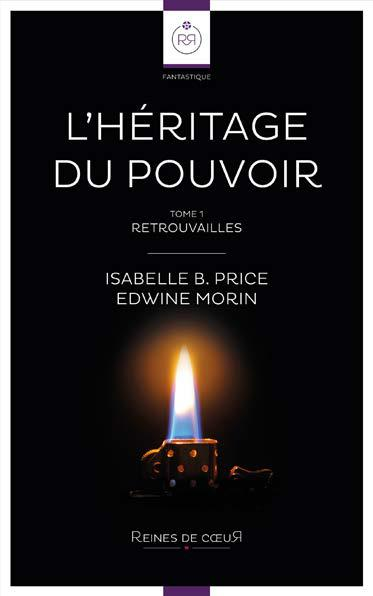

L’Héritage du Pouvoir
Tome 1 : Retrouvailles
Isabelle B. Price
Edwine Morin
1

Préface de l’éditeur
Publier un roman fantastique lesbien tel que L’héritage du
Pouvoir est un défi dans le paysage éditorial français actuel.
Ces deux genres de littérature que sont le fantastique et le
lesbien souffrent tous deux de nombreux préjugés. Trop ciblé, trop
ringard, trop populaire, pas assez littéraire en somme. Imaginez
donc le risque que représente l’alliance de ces deux genres. Vous
vous apprêtez à en lire le résultat.
Ici, chez Reines de Cœur, nous sommes intimement persuadées
que populaire ne rime pas forcément avec mauvaise qualité, et
nous assumons totalement notre envie de publier les romans que
nous voudrions lire. Parce que oui, nous sommes passionnées par
le fantastique, les vampires, les sorcières, les loups garous et autres
créatures. De nombreux romans nous en offrent mais il nous faut
toujours jongler avec le fait que les personnages sont forcément
hétérosexuels. Alors, pour une fois, on voudrait éviter de faire ce
travail et juste avoir des personnages qui nous plaisent. Des femmes
fortes, fières, un peu féministes et totalement lesbiennes vivant dans
un monde où la magie est omniprésente...
Reines de Cœur
ISBN : 979-10-95349-02-0
2

Chapitre 1
Vingt-quatre ans plus tôt
Le soleil dardait ses rayons sur la ville. Dans le parc municipal
ombragé par des cèdres centenaires, deux petites filles de
huit ans couraient dans les allées à en perdre haleine. Elles
se poursuivaient, des pistolets en plastique au poing, jouant au
policier et au voleur. Julianne, une petite blonde aux cheveux longs
filait en tête, talonnée par Sara, une brunette légèrement plus grande
qu’elle. L’écart entre elles s’amenuisait rapidement, la policière, Sara,
rattrapant la voleuse, Julianne.
Cherchant à s’en sortir, Julianne bifurqua à sa droite sur une large
étendue d’herbe. Cette action n’eut aucun effet, un simple petit mètre
les séparait désormais. Soudain, Sara bondit en avant et se jeta sur
la petite blondinette. Leurs membres désormais emmêlés, elles
roulèrent dans la pelouse en riant. Au loin, un chien aboya tandis
qu’à leurs côtés, un oiseau s’envolait en piaillant d’énervement.
Les cris de victoire de Sara résonnèrent dans le parc alors qu’elle
immobilisait son amie sous elle. Assise sur son bassin, ses mains
emprisonnaient celles de la voleuse. Un sourire éblouissant aux
lèvres bien qu’essoufflée, elle hurla :
— J’ai gagné !
Soudain Sara ressentit une violente douleur au niveau de la poitrine.
Sa vue se brouilla. Elle lâcha Julianne et porta ses mains à son cœur,
3
tétanisée. Julianne, coincée sous elle, l’appela mais aucun son ne
parvint à Sara et celle-ci s’écroula dans l’herbe, blafarde.
— Sara ? Sara ! cria Julianne en se penchant sur le corps inerte de son
amie. Réveille-toi !
La panique s’empara d’elle alors qu’elle secouait la petite brune
inconsciente.
— Mamie ! Mamie ! s’époumona Julianne en cherchant une adulte du
regard.
Les gens continuaient de marcher au loin mais personne n’approchait.
Elles semblaient seules au monde. La peur gagnait la jeune fille qui
continuait à appeler sa grand-mère d’une voix brisée par les sanglots.
Elle se rapprocha à nouveau du corps de Sara et apposa ses deux
mains sur son torse. Ce dernier ne bougeait presque plus. Sous le fin
t-shirt, elle sentit le cœur battre lentement, de manière anarchique.
Julianne ferma alors les yeux, inspira et expira profondément, et, à
travers ses larmes, se concentra sur le muscle cardiaque.
Des crépitements se firent sentir sous ses doigts et l’électricité
statique autour des deux enfants s’intensifia. Soudain, Sara ouvrit les
yeux et prit une brusque inspiration en se redressant. Assise dans
l’herbe, elle dévisageait Julianne qui semblait aussi surprise qu’elle.
Alors qu’elles allaient parler, une femme âgée arriva à leur hauteur et
attrapa la blondinette par les épaules.
— Julianne ! Est-ce que tu viens d’utiliser tes pouvoirs ? Julianne !
lança la femme aux cheveux blancs qui la dévisageait prise de panique
et en colère.
4
— Son cœur battait bizarrement, mamie… Je… Julianne bégayait,
perdue.
— Mon Dieu Julianne ! Il faut qu’on parte, vite. Sara reste là ! Je vais
appeler une ambulance, ne bouge pas !
L’adulte attrapa Julianne par la main et l’entraîna avec elle. Cette
dernière observait Sara sans pouvoir détacher son regard de ses yeux
marron doré. Elle voulait parler mais en était incapable. Emmenée
par sa grand-mère, elle disparut bientôt dans les allées du parc…
***
De nos jours
Sara était détective privée à New York. L’agence qu’elle avait créée
avec Marc quelques années plus tôt commençait à rencontrer un
certain succès : le bouche-à-oreille et leur réputation de ne jamais
abandonner une affaire avant de l’avoir résolue leur garantissait un
afflux continuel de clients. Ils étaient si demandés qu’ils pouvaient
désormais se payer le luxe de refuser des contrats, ne gardant que les
cas les plus intéressants.
Le contrat en cours avait été commandé par M. Wallace, un richissime
père de famille désireux d’enquêter sur les nouvelles relations de sa
fille. Sara avait flairé une affaire intéressante. Marc, lui, s’était montré
peu convaincu. Il était persuadé que Wallace s’inquiétait simplement
à l’excès pour sa progéniture. Après avoir insisté pour prendre le cas,
Sara avait mené ses recherches et découvert l’existence d’un réseau
de drogue à l’intérieur de la très prestigieuse université de Columbia.
5
L’organisation mafieuse vendait ses produits à des étudiants fortunés
en manque de sensations fortes par l’intermédiaire d’une fraternité
du campus. Une série de morts par overdose avait commencé à attirer
l’attention des autorités et Sara avait rapidement fait le lien entre la
drogue et le changement de comportement de la fille Wallace, elle-
même étudiante à Columbia.
L’enquête avait pris une nouvelle tournure et Sara et Marc avaient
décidé de réunir assez de preuves pour livrer les informations à la
police et faire tomber le réseau. Conscients que cette affaire pouvait
les mener vers une reconnaissance internationale, ils restaient
discrets et patients. Pour tenir, ils s’imaginaient déjà quittant leur
petit appartement du Queens et développant leur entreprise à
une autre échelle. Seulement, les choses avançaient lentement et
prenaient plus de temps que prévu. La police, certainement sous la
pression du maire de New York et des actionnaires, avait déployé
des moyens de grande envergure et les dealers se faisaient discrets
en attendant que les choses se tassent. Sara avait réussi à localiser,
parmi tous les étudiants impliqués dans cette affaire, le chef des
opérations et depuis près de sept jours, Marc et elle se relayaient
devant chez lui à l’affût du moindre faux pas. Les heures de planque
étaient longues et frustrantes, il ne se passait rien depuis une
semaine. Marc venait encore d’y passer la nuit entière, au froid,
dans sa voiture, pour un résultat nul. Il était cinq heures du matin et
Sara allait bientôt remplacer son associé et prendre sa place dans le
véhicule de surveillance. Avant cela, il lui restait deux bonnes heures
pour se défouler. Chaussant ses baskets et ignorant les ténèbres dans
lesquels la ville était plongée, elle prit la direction de Central Park à
petites foulées.
Sara faisait son jogging quotidien dans les allées du grand parc de
Manhattan. Le vent frais fouettait son visage, son souffle chaud créait
un petit nuage de buée à chaque expiration et sa queue de cheval se
balançait en rythme sur ses épaules. Ils étaient peu d’inconscients
à avoir bravé le froid hivernal en cette heure matinale et la jeune
6
femme appréciait le calme qui lui était offert avant de commencer sa
journée. Profitant de ses derniers instants de repos et de détente, la
jeune femme allongea ses foulées, filant à vive allure.
Au détour d’un virage, elle entendit soudain des cris et des hurlements
étouffés. Son sang se glaça et elle accéléra en direction des bruits. Elle
se stoppa derrière d’imposants arbres et découvrit une jeune femme
blonde qui se débattait face à deux agresseurs. Lorsque l’un des deux
hommes immobilisa cette dernière et que son acolyte s’approcha
d’elle menaçant, un objet indéterminé à la main, Sara sortit de sa
cachette de fortune et se précipita sur lui. Elle lui assena un crochet
du droit suivi d’un violent uppercut qui l’envoya à terre, sonné.
En position de garde, ses pieds ancrés au sol, elle se retourna alors
vers l’autre homme qui tenait toujours la jeune blonde contre lui.
Il lui bloquait les deux mains et l’empêchait de faire le moindre
mouvement. Menaçante, Sara l’observa et lui lança :
— Lâche-la !
Devant cette arrivée opportune, la blonde, silencieuse et pâle, cessa
de s’agiter et observa sa sauveuse. L’assaillant desserra soudain son
étreinte et poussa sa victime en direction de Sara sur laquelle elle
s’écroula. Toutes les deux s’écrasèrent au sol, surprises.
Sara se releva rapidement pour faire face à l’homme qui avait dégainé
une épée du fourreau accroché à sa taille. Qui utilise encore ce genre
d’arme à notre époque ? se demanda la brune interdite devant la lame
qui s’élevait dans sa direction. Le criminel fit plusieurs moulinés
avec le sabre avant de l’attaquer sans crier gare. Sara se baissa alors,
s’accroupit et le faucha d’un mouvement circulaire de la jambe. Il
tomba lourdement, son épée volant à plusieurs mètres derrière lui.
L’homme se releva malgré tout et chargea Sara qui venait juste de se
7
redresser. Prise au dépourvu, elle n’eut pas le temps de l’esquiver
et le choc fut d’une violence inouïe. L’épaule de l’homme heurta
brutalement sa poitrine lui coupant le souffle. Propulsée en l’air, elle
s’écroula quelques mètres plus loin, inconsciente.
L’agresseur se redressa alors, un sourire machiavélique plaqué
sur le visage, et s’approcha de la blonde qui avait observé la scène
horrifiée. Alors qu’il n’était plus qu’à quelques pas d’elle, il réalisa
bientôt qu’elle avait un briquet en main. Toute peur avait déserté son
visage. Elle apparaissait à présent déterminée et sûre d’elle. Un éclair
de panique traversa le visage de l’homme quand elle se redressa et
alluma le Zippo qui brillait dans les rayons matinaux du soleil. Le
frottement de la pierre fit naître une flamme qui s’éleva dans les airs.
La blonde approcha son autre main et la leva. La flamme s’agrandit
alors instantanément et fut propulsée par un nouveau geste de la
jeune femme en direction de l’homme. Désarmé et incapable de
l’éviter ce dernier se mit alors à brûler dans un cri aigu de douleur.
La blonde se désintéressa immédiatement de sa victime et jeta un
regard rapide à terre, là où se trouvait son autre agresseur. Elle constata
avec colère que celui-ci avait profité d’une minute d’inattention pour
prendre la fuite. Il était déjà hors de portée et elle n’avait pas le temps
de lui courir après. Refermant son Zippo et le repositionnant dans sa
poche, elle se précipita auprès de la femme qui venait de la sauver.
Son visage lui semblait familier sans qu’elle ne puisse se l’expliquer.
S’agenouillant à ses côtés, elle dégagea son visage recouvert par ses
longs cheveux bruns. Alors qu’elle la retournait pour l’allonger plus
confortablement sur le dos, elle réalisa que cette dernière ne respirait
plus. La panique s’empara une nouvelle fois de la blonde mais pour
de toutes autres raisons. Elle ne pouvait pas être responsable de la
mort d’une innocente. Non ! pensa-t-elle. Elle posa ses doigts dans
son cou à la recherche d’un pouls. Rien.
Déglutissant avec difficulté, fébrile, la blonde ouvrit la veste de sa
8
sauveuse et déchira son t-shirt pour avoir accès à sa poitrine. La
brassière de sport qu’elle découvrit dissimulait une petite poitrine
qui éveilla son désir sans qu’elle ne comprenne pourquoi. Refusant
de s’arrêter sur ce sentiment, elle détailla le petit renflement rond
au-dessus du sein de sa sauveuse. Un pacemaker, comprit-elle
rapidement.
La jeune femme posa alors sa main droite à plat sur l’appareil et se
concentra. Ce dernier envoya une première décharge électrique puis
une seconde et le cœur de la brune se remit à battre. Sa main droite
toujours sur la petite machine, elle positionna son autre paume sur
le cœur de la brune. Les battements étaient faibles mais réguliers et
ils gagnaient en force à chaque seconde.
Le cri de l’homme en train de brûler avait cessé. Un tas de cendre se
tenait maintenant à l’endroit où il avait été quelques minutes plus
tôt. La blonde se redressa, sortit son téléphone de sa poche et fit le
911 pour prévenir les secours. Avant de partir elle lança un dernier
regard à la femme à terre, inconsciente et murmura :
— Merci belle inconnue. Nous sommes quittes maintenant.
Son téléphone portable toujours à la main, elle composa un numéro
mémorisé par cœur et, alors que le répondeur de son interlocuteur
venait de se déclencher, énonça froidement :
— C’est Julianne. J’ai été repérée. Deux Traqueurs m’ont attaquée. J’ai
dû utiliser mes pouvoirs. Je dois quitter la ville le plus vite possible.
Elle raccrocha, puis ôta et détruisit la carte SIM de son mobile avant
de jeter celui-ci dans une poubelle. Elle remit ensuite la capuche de
son sweat-shirt sur sa tête et disparut d’un pas rapide loin du lieu de
9
l’attaque.
10

Chapitre 2
Le bruit lent et régulier des moniteurs emplissait la pièce blanche
où se trouvait Sara. Elle dormait paisiblement, les traits de son
visage relâchés et sereins. Seules une égratignure sur l’arcade
gauche et une ecchymose au niveau de sa poitrine témoignaient des
évènements violents de la matinée.
Le docteur Stevens observait d’un air grave sa patiente. Elle n’aurait
jamais dû survivre à ce choc. Il aurait dû lui être fatal. Il suivait Sara
depuis des années et était admiratif de sa résilience. Elle démontrait
une détermination à toute épreuve, même dans les moments les plus
difficiles. Il repensa à l’époque où elle avait été opérée à cœur ouvert,
plusieurs années auparavant et un éclair de tendresse passa dans
son regard. Il se ressaisit rapidement et stoppa sa contemplation de
la jolie brune. Il avait des affaires plus pressantes à régler.
Il sortit un téléphone de sa blouse et composa un numéro tout en
vérifiant autour lui qu’il était bien seul. Il mit le combiné à son oreille
sans quitter des yeux sa jeune patiente. Le ton de sa voix était assuré
et expéditif lorsqu’il prit la parole :
— Stevens au téléphone. Oui… Elle a été admise à l’hôpital ce matin
et j’ai pu l’examiner… Non, il n’y a aucune place au doute, la médecine
ne ment jamais. Elle est toujours en vie et ce n’est pas grâce à son
pacemaker, je ne vois qu’une seule explication…
Stevens n’eut pas le temps de finir sa phrase que son interlocuteur
avait déjà raccroché.
11
Il était en proie à un conflit interne. Il pensa à sa femme et sa fille et
secoua la tête en signe de résignation.
— Je suis désolé, murmura-t-il les yeux baissés, avant de poser la
main sur la poignée de porte et de quitter la pièce.
***
Alors que Stevens était sur le chemin du retour, un jeune homme dont
le visage lui était familier arriva en trombe dans le couloir. Il avait
l’air paniqué et son visage rouge ruisselait de sueur. Il avait dû piquer
un sprint pour se rendre à l’hôpital Mount Sinaï dans les temps.
— Vous, ici ? demanda-t-il interdit, reconnaissant le chirurgien qui
suivait Sara depuis des années.
— Oui, j’ai été prévenu tout comme vous que Sara avait eu un accident.
Sa pathologie étant rare, je me devais de faire le déplacement afin
de l’examiner. Maintenant que c’est chose faite, je peux vous assurer
qu’elle va très bien et qu’elle se réveillera dans quelques heures tout
au plus. Si vous voulez bien m’excuser, il me reste encore du travail.
Sans plus de cérémonie, le docteur Stevens prit congé, laissant le
jeune homme reprendre sa route en direction de la chambre 2431. Il
n’avait jamais aimé les regards que le chirurgien posait sur son amie,
mais il était obligé de reconnaître que ce dernier était talentueux et
qu’il prenait bien soin d’elle. Il entra doucement dans la pièce et alla
s’asseoir aux côtés de Sara.
Il prit délicatement sa main et murmura :
12
— Je suis désolé de ne pas avoir été là pour t’aider quand tu en avais
besoin.
Il fit une pause avant d’ajouter :
— Je jure que ça ne se reproduira plus.
Une larme vint lourdement s’écraser sur la main inerte aux longs
doigts fins qu’il avait enfermée entre ses deux paumes. À ce contact
humide, Sara sembla retrouver ses esprits et esquissa un léger
mouvement. Elle grogna indiciblement avant de tourner la tête et
d’ouvrir les yeux sur son ami qui se tenait à ses côtés. Son nez se
retroussa tandis que ses lèvres dessinaient déjà un faible sourire.
— Hey Marc…
— Chut, l’interrompit-il en posant un doigt sur ses lèvres. Tu me
raconteras tout ainsi qu’à la police plus tard, mais pour le moment tu
dois juste te reposer.
— Et la planque ? Le contrat, nos clients…
— Ne t’inquiète pas chérie, la stoppa Marc, le travail c’est secondaire.
Le plus important, c’est ta santé. Il faut que tu te soignes et que tu te
reposes.
— Elle était là.
Marc haussa les sourcils, étonné.
13
— Qui était là ?
La question de Marc resta sans réponse alors que Sara se contentait
de lui répéter « elle était là » avant de refermer les yeux, son sourire
toujours accroché aux lèvres. Derrière ses paupières closes, l’image
de la blonde qu’elle avait rencontrée quelques heures plus tôt ne
cessait de danser. Ce moment repassait sans cesse dans son esprit
et dans ses songes. Elle avait l’impression de la connaître, elle avait
l’impression de sentir son toucher sur son corps, sa présence à
travers elle. C’est au fil de ces pensées réconfortantes qu’elle sombra
à nouveau dans un profond sommeil.
***
Plusieurs heures s’étaient écoulées depuis l’agression qui avait eu
lieu à l’aube. Julianne n’était pas repassée à son appartement. Elle
savait qu’il devait être sous surveillance, les risques étaient trop
importants. Elle s’était donc rendue de l’autre côté de la ville, dans un
garde-meuble où elle avait entreposé un sac à dos pour les urgences
de ce genre. Il contenait de quoi fuir en cas de danger. Elle y trouva
de l’argent liquide, de nouveaux papiers d’identité, des vêtements, un
nécessaire de toilette et un nouveau téléphone prépayé. Elle vérifia
la batterie et fut rassurée. Elle aurait de quoi tenir avec les 48 %
présents.
Passant une main dans ses cheveux courts, la jeune femme prit
rapidement la direction de la gare routière. Elle monta dans le
premier bus en partance. La Pennsylvanie ce n’est pas si mal, songea-t-
elle en s’asseyant. Elle s’installa à côté d’une adolescente aux cheveux
rouges avec des écouteurs vissés aux oreilles et une console portable
dans les mains. Julianne percevait le rythme rock qui s’échappait du
casque et, loin de la déranger, cette gêne ordinaire la rassura et lui fit
du bien. Ce monde normal était tout ce à quoi elle aspirait.
14
Fermant les yeux, elle s’appuya contre le siège et laissa les images
du matin revenir la hanter. Elle avait senti sa dernière heure arriver
quand les Traqueurs l’avaient agressée. Ils lui avaient bloqué les
mains l’empêchant de se défendre et elle avait vu le collier anti-magie
qu’ils s’apprêtaient à lui attacher autour du cou. Si la grande brune
n’était pas intervenue, elle serait morte à l’heure qu’il est. Le visage
de sa sauveuse dansa devant ses yeux et le prénom « Sara » résonna
dans sa tête sans qu’elle parvienne à l’arrêter. Même si elle refusait
de le reconnaître et de l’admettre, elle savait. Cette femme était Sara.
Sa Sara.
Une unique larme glissa sur sa joue alors qu’elle se promettait de
la protéger. Julianne savait qu’elle devait partir, mettre le plus de
kilomètres entre elles pour la préserver. Elle ne pouvait pas risquer
qu’il lui arrive quoi que ce soit. Sara avait le droit de vivre libre.
Retenant un sanglot, elle se concentra pour se rappeler le visage de
cette femme qu’elle connaissait depuis longtemps. Elle était devenue
encore plus belle en vieillissant. Ses yeux marron n’avaient pas
changé et elle était presque sûre d’avoir aperçu leur couleur dorée
quand ils s’étaient posés sur elle. Elle avait un corps athlétique et était
plus grande qu’elle, comme dans ses souvenirs. Était-elle mariée ?
Quel était son métier ? Avait-elle des enfants ? Était-elle heureuse ?
Toutes ces questions se pressaient dans la tête de Julianne qui finit
par s’endormir, terrassée par la fatigue.
***
Dans un hangar isolé et décrépi à l’abandon, l’homme vêtu de noir
posa une poche de glace sur son menton meurtri. L’uppercut qu’il
avait reçu lui avait cassé deux dents et la douleur persistante était
cuisante. Il n’était pas fier de s’être laissé surprendre et attaquer. Il
avait été mis KO et si la seconde équipe ne l’avait pas trouvé à temps,
il serait en ce moment même au poste de police à tenter de sauver sa
15
peau.
Dissimulé dans l’ombre, assis sur une chaise qui avait tout d’un trône,
Zacharias avait le visage fermé. D’un simple « alors ? » il donna le
signal à l’homme de parler. Conscient qu’il devait être convaincant
s’il voulait satisfaire son chef, ce dernier commença à expliquer :
— On la tenait. Et là, une furie inconnue nous a sauté dessus et m’a
maîtrisé. Après je sais pas… Carlyle a réussi à mettre cette folle K.O.
mais il s’est passé autre chose. La fille a dû utiliser ses pouvoirs pour
le tuer. Je comprends pas. Toutes les recherches qu’on a faites sur
elle montraient qu’elle était seule, sans protecteur. Cette inconnue a
débarqué de nulle part.
— Tu es sûr que c’était sa protectrice ? lança derrière lui une voix
provenant de Micah, le chef de l’équipe qui lui était venu en aide.
— Qui voudrais-tu que ce soit d’autre ? rétorqua l’homme vexé en
se retournant brusquement. Elle m’a démoli en deux coups. Sa force
était surhumaine.
— Je croyais que tu ne savais pas qui était cette femme. Tu as employé
les mots « furie inconnue », le coupa Zacharias en avançant d’un pas
en direction de l’homme.
Ce dernier était de plus en plus mal à l’aise.
— Je ne… Je ne sais pas qui c’est… Mais c’est forcément sa protectrice…
C’est…
Le regard de Zacharias n’était plus posé sur l’homme en face de lui
16
mais sur Micah. Lorsque son pouce se tourna vers le bas, ce dernier
leva la hache qu’il tenait en main. La peur liquéfia l’individu blessé qui
commença à bégayer, les mains devant lui pour supplier son patron.
Aucune expression ne traversa le visage de Micah quand il s’avança
et décapita celui qui avait été son collègue. Il avait échoué, il devait
en payer le prix. Aucune goutte de sang ne perla, la tête et le corps
disparaissant dans un nuage de poussière en direction du plafond.
— Micah, trouve-moi cette sorcière et ramène-la-moi, ordonna
Zacharias toujours dissimulé dans l’ombre. On ne peut pas faire
confiance à ces Traqueurs.
Le regard noir pénétrant de l’homme se porta sur son partenaire.
Ils devaient reprendre tout ce qu’ils connaissaient sur cette femme.
Quittant les lieux, Micah déclara soudain :
— Faisons le tour des hôpitaux. Si cette femme a un lien avec notre
sorcière nous devons l’utiliser.
17

Chapitre 3
Après cinq heures et demie de route, Julianne se trouvait
maintenant à Pittsburgh. La gare grouillait de monde et
l’effervescence la rassura. Personne ne savait qui elle était.
Elle était dans un lieu public, en sécurité. Observant le tableau
d’affichage, elle s’arrêta sur un train en partance pour Atlanta et
décida d’acheter un billet. Atlanta pouvait être une ville intéressante
où poser ses valises pour les prochains mois, voire les prochaines
années.
Les minutes s’égrenèrent lentement avant que la jeune femme
ne monte dans le train. Elle observait sereine les personnes qui
l’entouraient. Ses nouveaux papiers d’identité faisaient d’elle Julia
Bryant. Pourquoi pas ? Une nouvelle vie s’offrait à elle sous ce nom.
Le convoi s’ébranla rapidement et fila à vive allure en direction de
l’autre partie des États-Unis.
Sans qu’elle ne puisse rien faire pour l’empêcher, les pensées de la
jeune blonde dévièrent une nouvelle fois sur sa sauveuse. Elle tenta
de faire coïncider les souvenirs de son enfance et les images du matin.
Elle imagina le sourire de Sara, ce geste si particulier qu’elle avait
quand elle repoussait ses cheveux de son visage, ses yeux virant au
doré, la douceur de sa peau. Son esprit la poussait dans cette direction
alors qu’elle se refusait à cela depuis des années. Julianne se maudit
intérieurement, énervée. Revoir Sara avait eu plus d’impact qu’elle
ne le pensait. C’était comme si son esprit et son corps refusaient de
la perdre une nouvelle fois. Irritée, elle se leva et alla se dégourdir les
jambes dans l’espace entre les wagons.
18
Julianne était excédée et commença à marcher de droite à gauche
pour se calmer. Tout allait bien se passer. Elle allait se construire
une nouvelle vie, loin de tous, seule, comme elle le faisait depuis
des années. Sara serait protégée. Julianne serait, elle, totalement
indépendante. Elle n’aspirait à rien d’autre. C’était ce qu’elle voulait
tenta-t-elle de se convaincre. Sauf que son esprit refusait de l’entendre.
Et, lorsqu’elle leva la tête et observa un père de famille jouant avec
ses deux enfants, elle sut qu’elle ne voulait pas tout recommencer
à zéro. Elle avait besoin de se poser, de se ressaisir. Peut-être que ce
serait une bonne idée de rentrer quelques mois, pensa-t-elle alors.
Julianne sortit son téléphone portable de sa poche et composa le
numéro qui était gravé dans sa mémoire. Lorsque la voix chaude et
rauque résonna au bout de la seconde sonnerie, la jeune femme se
sentit immédiatement à la maison.
— Allo ? déclara l’homme tranquillement.
— Grand-père, c’est Jules, commença la jeune femme d’une voix
douce et plus apaisée.
— Julianne ! Je suis ravi d’avoir de tes nouvelles. Qu’est-ce qu’il t’est
arrivé ? Tu as pu échapper à tes poursuivants ? répondit l’homme,
l’inquiétude transparaissant dans sa voix.
— J’ai quitté New York ce matin. J’ai traversé la Pennsylvanie. Je
suis en Virginie. Ça va, ne t’inquiète pas, tenta de le rassurer cette
dernière.
— Bien sûr que je m’inquiète ! Tu… Il grogna et elle comprit qu’il
voulait lui poser une centaine de questions qu’il retenait. J’allais te
faire la leçon, mais ça ne servirait à rien, n’est-ce pas ?
19
— Non ! lança la jeune femme dans un petit rire cristallin qui détendit
immédiatement celui qui lui avait tout appris. C’est gentil de te retenir.
— Tu peux me raconter ce qu’il s’est passé ? questionna plus
doucement le vieil homme.
— Je… Je me suis fait attaquer. Ils étaient deux. Ils me maintenaient,
commença la jeune femme qui voyait revenir son angoisse à mesure
qu’elle expliquait ce qu’il s’était passé. Je… Une femme est arrivée
et s’est interposée. J’ai pu retrouver l’usage de mes mains et de mes
pouvoirs… Et je me suis sauvée, termina Julianne espérant que ce
résumé ne lui attirerait pas plus de questions.
— D’accord. Cette femme… Tu la connaissais ? demanda Cadmus un
ton plus bas.
— Arrête… Non… On peut parler d’autre chose… S’il te plaît ?
L’anxiété de la blonde était revenue en flèche, elle ne voulait pas
aborder le sujet avec lui, encore moins au téléphone. C’était trop tôt.
Elle n’était même pas sûre.
— Comme tu veux. Je sais qu’elle habite à New York, c’est tout, lança
nonchalamment ce dernier.
— Tu… Tu sais… Un silence de quelques secondes s’installa entre
eux. Est-ce que tu sais si elle… si elle va bien ? osa soudain Julianne
qui baissait les armes.
— Elle est en vie si c’est ta question. Je n’en sais pas beaucoup plus.
20
Un soupir de soulagement échappa à Julianne et Cadmus le perçut.
Il n’était pas dupe. Il savait ce qui la liait à celle dont elle refusait de
prononcer le nom. Les rares fois où ils parlaient d’elle, Cadmus avait
l’impression d’utiliser un code pour ne pas blesser sa petite fille. Il
avait beau vouloir avancer à son rythme et accepter ses choix, ce
n’était pas toujours aussi simple et évident.
— Merci. Je… Elle hésita avant de parler si doucement que l’homme
eut peur d’avoir mal entendu. Je me disais que ça faisait longtemps
que je n’étais pas rentrée. Tu crois que je peux…
— Rentre Julianne. Rentre à la maison. Tu sais que tu es toujours la
bienvenue, la coupa-t-il d’un ton rassurant et fort.
— D’accord. Merci. J’arrive. Elle avait conscience que sa voix trahissait
son soulagement, mais elle en avait assez de fuir et de se cacher. Pas
longtemps, juste…
— Tu pourras rester autant de temps que tu le veux. Tu le sais. Envoie-
moi juste un message quand tu sauras l’heure d’arrivée de ton avion.
J’enverrai une voiture te chercher, annonça Cadmus comme une
évidence.
— Merci. Je dois te laisser. Je n’ai plus de batterie, coupa Julianne qui
ne voulait pas que la conversation s’éternise.
— Bonne journée et à bientôt, acheva alors le vieil homme. Je suis
ravi de te revoir.
Ils raccrochèrent tous les deux et Julianne laissa la tension qui s’était
emparée d’elle ces dernières heures abandonner son corps. Elle avait
pris la bonne décision. Même si ce n’était que pour une semaine ou
21
deux, elle pourrait se reposer et se détendre avant de repartir et de
se construire une nouvelle vie. Juste une semaine ou deux… Pas plus…
se raisonna-t-elle.
***
Micah et l’un des Traqueurs de son équipe trouvèrent rapidement
Sara. Ils avaient fait le tour des hôpitaux de la ville avant de l’identifier.
Ils recherchaient une femme brune d’une trentaine d’années
admise le matin même et trouvée dans les environs de Central
Park. Paradoxalement, il y en avait peu dans une aussi grande ville
que New York. Lorsqu’ils prirent connaissance de son numéro de
chambre, ils décidèrent d’aller lui rendre une petite visite. Au bout de
plusieurs heures de déambulation dans les couloirs du Mount Sinaï,
Micah repéra les vestiaires du personnel et entra. Ils s’emparèrent de
blouses et de stéthoscopes pour rendre leurs tenues plus réalistes et
se dirigèrent d’un pas décidé vers la chambre 2431.
Lorsque les deux hommes entrèrent, ils découvrirent Marc assis
sur le fauteuil visiteur, endormi. C’était un grand jeune homme aux
épaules carrées. Ses courts cheveux d’un noir de jais contrastaient
avec la pâleur de sa peau et la finesse de ses traits. Il serrait la main
de la brune, la tête posée sur le lit. Celle-ci répondait au doux nom
de Sara McIntosh et était également assoupie. Sa respiration lente
et régulière était à peine audible, dissimulée par le bip régulier de
l’appareil qui suivait ses battements cardiaques. Les deux hommes
s’observèrent avant de s’approcher lentement du lit.
Micah posa la main sur l’épaule du jeune homme qui l’empêchait
d’atteindre Sara. Ce dernier se réveilla alors d’un bond, surpris. Il
lâcha son amie et passa la main sur son visage pour retrouver plus
rapidement ses esprits.
22
— Oh heu… Désolé… Bonjour… Vous êtes des collègues du docteur
Stevens ? demanda-t-il étonné en se frottant les yeux.
— Oui, rétorqua simplement Micah qui n’était pas prêt à s’embarrasser
de formalités. Comment va-t-elle ? Elle se souvient de quelque chose ?
— Elle a dormi presque toute la journée. Dites, j’ai entendu vos
collègues dire que le pacemaker avait été endommagé lors du choc.
Vous allez le réparer ou il faut le changer ? La question est peut-
être stupide, mais ça fait vingt-cinq ans qu’elle a cet appareil et il
se fait peut-être un peu vieux, interrogea le jeune homme stressé et
soucieux.
— Je ne sais pas. Nous avons besoin de l’interroger pour savoir si elle
se souvient de ce qu’il s’est passé avant le choc, répondit l’homme en
le prenant de haut. Pouvez-vous sortir pour nous laisser faire notre
travail s’il vous plaît ?
Micah lui indiqua la porte d’un geste dur et Marc se leva sans un mot
de plus, déconcerté. Une fois qu’il eut passé le seuil, les deux faux
médecins entourèrent le lit de Sara et la secouèrent pour la réveiller.
La jeune femme émergea en sursaut et sourit doucement à ceux qui
lui faisaient face.
— Bonjour, murmura-t-elle la voix empâtée.
— Bonjour madame McIntosh. Nous sommes neurologues et nous
sommes là à la demande du docteur Stevens, commença Micah d’une
voix autoritaire. Pouvez-vous essayer de vous rappeler ce qu’il s’est
passé ce matin avant que les secours n’arrivent ?
— Oui, bien sûr, répondit Sara habituée des hôpitaux et de ces
23
pratiques. Je faisais mon jogging comme tous les matins. J’ai entendu
des bruits et des cris étouffés derrière un arbre. J’ai pensé que
quelqu’un avait des ennuis. Du coup je me suis approchée. Deux
hommes s’en prenaient à une femme. Il y en avait un qui la retenait
prisonnière entre ses bras et l’autre avançait pour la frapper. Je me
suis jetée sur le second et je l’ai cogné. Puis l’autre mec m’a jeté la fille
dessus et a dégainé une épée. C’est bizarre quand même une épée,
non ? À notre époque ? C’était peut-être un fou de mythologie ou je
sais pas trop quoi. Je l’ai désarmé et il m’a foncé dessus. Je me suis
écroulée et là black-out total.
— Vous aviez déjà rencontré cette femme ? questionna Micah sans se
préoccuper des interrogations de la jeune femme.
— Non, je ne l’avais jamais vue. Mais… C’est ridicule, vous allez
penser que je suis folle… Mais je crois que je la connaissais. Quand
j’étais petite…
Les deux hommes échangèrent un sourire de connivence qui
n’échappa pas à Sara. Un frisson d’angoisse remonta alors le long
de sa colonne vertébrale. Elle ne parvint pas à s’expliquer cette
réaction. Elle avait pourtant l’habitude des médecins, elle connaissait
le fonctionnement des hôpitaux. Rien de tout cela ne lui apparaissait
surprenant. Cependant, en cet instant, son instinct de survie lui
hurlait que quelque chose clochait. Et s’il y avait bien une chose en
laquelle Sara avait totalement confiance, c’était son intuition. Sans
réfléchir, elle rajouta brusquement :
— Enfin la seule ressemblance c’est qu’elles étaient toutes les deux
blondes. C’est ridicule. Non, je ne la connais pas.
Ne l’écoutant plus, Micah se rapprocha et commença à débrancher les
fils reliés aux électrodes sur le corps de la jeune femme. Son collègue
24
avait de son côté éteint les moniteurs si bien que plus aucun bruit ne
se faisait entendre. Sara déglutit avec difficulté. Ce n’était pas normal,
elle le sentait. Elle le savait, ces hommes ne lui voulaient pas du bien.
Ils n’étaient sans doute même pas médecins. Apeurée, elle parvint à
articuler :
— Qu’est-ce que vous faites ?
— On va faire un tour, répondit simplement Micah, le regard dur et
tranchant comme de l’acier.
25

Chapitre 4
Marc rongeait son frein devant la porte de la chambre d’hôpital.
Il avait l’habitude qu’on le fasse sortir, mais il avait détesté
que ces médecins ne répondent pas à ses questions. Pour
qui se prenaient-ils ? Il avait le droit d’être là, le droit de demander
des précisions. Il n’était pas n’importe qui ! Soudain, lorsqu’il vit le
docteur Stevens traverser le couloir en direction de la sortie il n’y tint
plus et l’arrêta.
— Dites, docteur Stevens, vos nouveaux collègues c’est pas ça ! Ils ont
carrément refusé de répondre à mes questions !
— Quels collègues ? demanda l’homme en haussant un sourcil
surpris. Je suis le seul à m’occuper de Sara.
— Deux mecs de presque deux mètres de haut, cheveux et yeux noirs.
Pas souriants pour deux sous, tenta de lui expliquer Marc décrivant
de manière très personnelle les deux hommes.
Il n’avait pas terminé sa phrase que le docteur Stevens entrait
brusquement dans la chambre 2431. Il découvrit les deux individus
en question enlevant les électrodes sur le torse de Sara et arrêtant les
moniteurs. Comprenant immédiatement ce qu’il était en train de se
passer, il angoissa. Cependant, il garda son sang-froid comme il l’avait
appris durant ses longues années d’études et sourit calmement en
s’emparant du dossier accroché au pied du lit.
— Messieurs, commença-t-il en hochant la tête en signe de salut.
26
Puis, se tournant vers sa patiente, il lança :
— Alors ma petite Sara, bien réveillée ?
— Oui. Mais j’ai l’impression d’être passée sous un semi-remorque.
J’ai mal partout. Oh, je vous présente les deux neurologues que vous
avez convoqués docteur Stevens. Elle se tourna vers les hommes tour
à tour et lança de manière calculée :
— Désolée, vous ne m’avez pas donné vos noms.
Les faux médecins n’hésitèrent qu’un instant avant que Micah ne
déclare :
— Docteur Clark et voici mon collègue le docteur Pick. Nous avons
quelques examens complémentaires à faire dans notre service si
vous n’y voyez pas d’inconvénient docteur Stevens.
— Eh bien si, justement. Je venais annoncer à ma patiente que son
rendez-vous en radiologie était avancé. J’ai réussi à convaincre ma
collègue. Elle peut faire l’angiographie maintenant, énonça-t-il en
faisant un clin d’œil à Sara qui n’en menait pas large.
Marc était quant à lui interloqué par le déroulement de la discussion,
quelque chose d’anormal était en train de se tramer.
Le docteur Stevens passa la tête par l’entrebâillement de la porte et
héla une infirmière pour qu’elle l’aide à descendre Sara en radiologie.
La paramédicale ne semblait pas ravie, mais suivit les consignes du
chirurgien. Elle pilota le lit, la jeune patiente à l’intérieur, en direction
des étages inférieurs. Marc eut le droit d’accompagner Sara alors que
27
Micah et son acolyte restaient seuls dans la chambre, énervés. Ils
posèrent un regard noir et dur sur le docteur Stevens qui les ignora,
rajoutant simplement :
— Je vous la ramène dans quelques minutes. Vous pouvez aller boire
un café en attendant.
Ils quittèrent rapidement l’étage et se retrouvèrent tout aussi vite
dans le service de radiologie, au sous-sol du bâtiment. Le chirurgien
fit installer Sara dans la salle d’attente le temps d’aller discuter avec
le radiologue. Une fois à distance de la jeune femme et de son ami
Marc, il décrocha son téléphone et composa le numéro qu’il avait
déjà appelé le matin même. Il exposa immédiatement le problème :
— Nous avons des ennuis. Deux Traqueurs étaient dans la chambre
de Sara quand je suis arrivé. Ils allaient l’emmener… Nous devons
trouver une solution ! s’emporta-t-il dans un élan de panique.
La réponse de son interlocuteur lui déplut et il s’énerva, hurlant dans
le combiné :
— Elle est en danger ! C’est une cible facile ! Vous devez la protéger !
L’homme qu’il avait au bout du fil raccrocha et le docteur Stevens
frappa de rage dans le mur en face de lui. La douleur lui déchira le
pied et remonta le long de sa jambe. Pourtant, l’espace d’un instant
il eut le sentiment que sa fureur diminuait. Son interlocuteur avait
refusé de l’aider. La partie rationnelle de son esprit comprenait
cette décision logique. Mais l’autre partie, celle où ses sentiments
prenaient le dessus, lui rappelait qu’il aimait cette jeune femme et
qu’il ne pouvait pas se résoudre à l’abandonner. Le chirurgien inspira
profondément pour se calmer. La première chose à faire était de
28
changer le pacemaker de Sara. Il était endommagé et ne jouait plus
convenablement son rôle de défibrillateur cardiaque. La seconde
était de la mettre à l’abri. Enfin, l’ordre de priorité était peut-être à
inverser. Il ne savait plus.
Le docteur Stevens décida de faire ce qu’il savait faire le mieux. Il
appela la surveillante en chef du bloc opératoire d’urgence. L’heure
avait tourné. Il était maintenant presque 20 h et il ne voyait aucune
raison de repousser encore l’intervention. Lorsqu’il exigea un bloc
pour changer le boitier de Sara McIntosh, ce dernier ne lui fut pas
refusé. Il partit prévenir sa patiente l’informant du fait que l’examen
radiologique ne serait pas nécessaire, mais qu’il avait besoin de
l’opérer en urgence. Le docteur Stevens lui expliqua rapidement
les conséquences du choc sur l’appareil qui la maintenait en vie et
la nécessité de le changer dans les plus brefs délais. Il aurait tout
le temps de s’occuper de la sécurité de Sara quand elle aurait un
nouveau pacemaker et qu’elle serait en salle de réveil, stabilisée.
La solution se profila quelques heures plus tard. Il apprit qu’un riche
émir venait de se faire opérer et qu’il était en service de réanimation.
Craignant pour sa sécurité, ce dernier avait voulu bloquer tout le
département mais devant l’impossibilité, s’était résolu à installer une
simple équipe de gardes du corps. Les anciens militaires hautement
entraînés indisposaient le personnel du service au plus haut point.
Ils surveillaient tout le monde et vérifiaient chaque entrée. Quoi
de mieux ? songea Stevens. Il lui suffisait de demander un lit en
réanimation pour sa patiente. Elle serait à l’abri, protégée pour
l’occasion par le haut niveau de sécurité imposé par ce richissime
homme d’affaires.
***
Deux jours passèrent avant que Julianne n’atterrisse à l’aéroport de
29
Phoenix. Comme promis par Cadmus, une voiture l’attendait pour la
conduire au sanctuaire. Même si elle avait dormi durant une grande
partie du trajet en avion, la jeune blonde se retrouva à somnoler dans
le véhicule tout terrain qui filait sur les routes défoncées. Antonio était
toujours aussi taciturne et, même s’il avait été ravi de la retrouver, il
ne s’obligeait pas à faire la conversation. L’autoradio diffusait du jazz
et la musique berça Julianne. Elle se sentait apaisée.
La jeune femme se réveilla des heures plus tard. Le soleil dardait ses
rayons sur les montagnes ocres du désert des Mojaves. Lorsqu’ils
passèrent la clôture d’entrée du domaine, Julianne demanda à
Antonio de faire une pause. Il ne leur restait qu’une vingtaine de
minutes avant d’arriver au sanctuaire et ce dernier, dont le ventre
criait famine, rêvait d’un délicieux repas.
— S’il te plaît, Antonio, l’implora-t-elle voyant que l’idée ne
l’enchantait guère. Je t’offre une cigarette.
Il allait rétorquer qu’il avait cessé de fumer depuis deux ans quand il
vit l’éclat lumineux de l’espoir envahir les yeux de Julianne.
Il secoua la tête, blasé, se félicitant au passage d’être marié à une
sorcière et de comprendre. Il savait ce que Julianne voulait sans
qu’elle ait besoin de le verbaliser. Il arrêta la voiture sur le bas-côté et
sortit du véhicule en même temps que la jeune femme. Elle dégaina
un paquet de Marlboro de sa poche qu’elle commença à ouvrir pour
en donner une à Antonio. Elle ne fumait pas. Il le savait. Il refusa la
cigarette d’un signe de la main et elle jeta négligemment le paquet
sur le siège passager du 4x4. Il n’était qu’un prétexte dont elle ne
souhaitait plus s’embarrasser.
Julianne s’empara du Zippo qui ne la quittait jamais, cadeau de sa
grand-mère. Elle apprécia la douceur du métal dans sa paume et fit
30
glisser ses doigts sur les gravures de flamme et de dragon présentes
sur chacune des faces. Lorsqu’elle l’ouvrit, le petit bruit métallique
habituel lui arracha un sourire. L’odeur d’essence l’apaisa comme
toujours et elle ne put résister plus longtemps au plaisir d’allumer
son briquet. Quand la flamme s’éleva, Julianne décupla sa taille d’un
simple geste de la main et la propulsa dans les airs.
Pour la première fois depuis ces dix dernières années, la jeune
sorcière laissa libre cours à son pouvoir. Elle déploya la flamme
jusqu’à ce qu’une tornade de feu apparaisse devant eux. Elle se savait
protégée par la barrière magique instaurée par Cadmus. Utiliser son
pouvoir ici ne mettrait pas les Traqueurs sur sa piste. Elle décida
alors d’en abuser et s’amusa comme elle n’en avait pas eu l’occasion
depuis bien longtemps.
***
— À ce que je vois, tu n’as pas changé ! s’exclama une voix familière
derrière Julianne.
— Grand-père ! s’écria-t-elle en apercevant Cadmus avant de se jeter
dans ses bras, laissant s’éteindre la flamme qu’elle avait attisée avec
ses mains.
Cadmus n’était pas son grand-père, du moins pas techniquement.
Il était le compagnon de sa grand-mère et l’avait élevée comme si
elle avait été sa propre petite fille. Julianne n’avait jamais su s’il y
avait eu plus que de l’amitié entre l’homme qu’elle tenait entre ses
bras et sa défunte Mamina. Tous les deux étaient trop pudiques pour
laisser transparaître quoi que ce soit. Protégée dans l’étreinte de cet
homme aux cheveux parsemés et grisonnants et au visage buriné
par le temps, elle se sentit immédiatement réconfortée. Elle huma
31
cette odeur qu’elle n’avait plus connue depuis tellement d’années.
Trop d’années. L’odeur de la maison, du foyer qu’elle cherchait en
vain depuis qu’elle avait opté pour cette vie d’exil et de solitude. Elle
qui avait enfoui ses sentiments dans un emplacement de son cœur
qu’elle croyait inatteignable ne se savait pas sujette à la sensiblerie.
Elle ne put cependant empêcher une larme de rouler sur sa joue. Tant
d’émotions, de souvenirs se bousculaient en elle à cet instant. C’était
plus qu’elle ne pouvait en supporter.
La sentant renifler bruyamment, Cadmus desserra son étreinte pour
regarder sa protégée. Ils n’avaient pas besoin de mots en cet instant
si criant de vérité. Il planta son regard dans les yeux humides de
Julianne et lui dit simplement :
— Je sais… Ne t’en fais pas, ensemble nous allons trouver une solution
à tes problèmes.
Julianne hocha la tête en signe d’acquiescement, avant de tourner
son visage vers Antonio qui avait été témoin de cette scène de
retrouvailles.
— On y va ? lança-t-il simplement à ses deux interlocuteurs.
— Oui, tu ramènes Cadmus, moi je prends son cheval pour rentrer.
Ce n’est plus Arius ? demanda la jeune femme en observant le vieil
homme de manière surprise.
— Arius est mort il y a quatre ans maintenant. Voici Créon. Il lui
ressemble beaucoup sous certains aspects, concéda le vieil homme
en flattant le museau de l’animal qui était à ses côtés. Sans vouloir
te blesser, il ne te connaît pas et ça doit faire dix ans que tu n’es pas
montée. Tu es sûre de toi ? la taquina Cadmus en riant.
32
— Ça fait tellement longtemps que tu n’es pas venue ici, tu serais
étonnée de voir à quel point ça a changé, surenchérit Antonio, un
sourire au coin des lèvres.
— À d’autres ! envoya Julianne en tirant la langue, une moue boudeuse
accrochée au visage.
Bien qu’elle ait grandi et vieilli depuis leur dernière rencontre, les
deux hommes reconnurent à ne pas s’y tromper l’air vous-pouvez-
dire-ce-que-vous-voulez-je-m’en-fous de Julianne qui s’apprêtait à
s’emparer des rênes de l’animal sans y avoir été invitée. Ce faisant,
elle dépassa celui qu’elle aimait appeler grand-père et, avec un air
joueur, le bouscula pour atteindre Créon. À cet instant, son sourire
se fana sur son visage et elle perdit le sens de la réalité. Son esprit
se retrouva aspiré par une vision d’une puissance inouïe. Tout ce
qui l’entourait semblait avoir disparu. Antonio, Cadmus, le désert, le
soleil… plus rien n’existait.
Julianne se retrouva alors vingt ans en arrière. Sa Mamina et Cadmus
discutaient dans la cuisine de la maison. Cadmus avait les cheveux
poivre et sel, sa grand-mère était aussi jeune que dans ses souvenirs.
Mais, loin d’être heureux et détendus, tous les deux s’affrontaient. Le
ton montait et pour la première fois de sa vie Julianne assistait à une
dispute entre les deux personnes qui comptaient le plus pour elle.
Spectatrice, incapable du moindre mouvement, elle observa ce qui se
déroulait. Sa grand-mère cracha soudain au visage de l’homme qui
partageait sa vie depuis des années :
— Je t’interdis ! Tu m’as bien comprise ! Je t’interdis !
La violence de ses propos déformait son visage et ses yeux lançaient
des éclairs.
33
— Écoute-moi, laisse-moi t’expliquer. Julianne doit savoir.
— Non ! Elle a droit à une vie aussi normale que possible ! Pas à ce
genre de vie ! Si la prophétie mentionne ses trente-trois ans, c’est
bien assez tard ! Tu lui diras plus tard.
— Mais elle doit se préparer. Elle doit… tentait de se justifier Cadmus
sans hausser le ton.
— Je te défends de lui parler ! Tu m’entends ! Je te l’interdis ! Elle
devra affronter son destin bien assez tôt ! continua Mamina prête à
tout pour sa petite-fille.
La scène s’effaça alors que Julianne tentait de se concentrer pour
ne pas voir disparaitre sa grand-mère et Cadmus. Mais rien n’y fit,
son esprit ne pouvait persister et en voir plus. Alors que le monde
qui l’entourait s’imposait à nouveau à elle, la jeune femme perdit
connaissance, la tête broyée par une terrifiante migraine.
34

Chapitre 5
Sara ouvrit lentement les yeux. Elle se sentait fatiguée comme
rarement. Malgré sa maladie, elle avait toujours possédé une
force et une énergie hors du commun. Mais en cet instant, elle
avait l’impression que ce don l’avait quittée. Elle tourna légèrement
la tête pour regarder de chaque côté. Elle était encore à l’hôpital,
reliée à un moniteur émettant des bips réguliers, cependant, elle
avait changé de chambre.
Les souvenirs ressurgirent au fur et à mesure que les secondes
passèrent. La vision des deux hommes inquiétants lui revint en
mémoire. Quelque chose clochait, elle en était certaine. Son instinct
ne la trompait jamais. Marc n’était plus là, pas plus que le docteur
Stevens.
Non sans grimacer sous l’effort, Sara se redressa sur ses deux coudes
pour voir plus en avant. Des rideaux l’isolaient du reste de la pièce
dont elle ne pouvait clairement estimer la grandeur. J’espère que l’on
ne m’a pas mise en quarantaine, ne put-elle s’empêcher de penser.
Elle resta ainsi immobile pendant plusieurs minutes, le temps de
s’imprégner de l’atmosphère et des bruits environnants.
Après quinze minutes passées ainsi à observer les alentours, elle
sut avec certitude qu’un vigile faisait une ronde de long en large.
Considérant l’intensité du bruit des foulées, Sara estima qu’il fallait à
peine moins de quarante pas à l’homme de la sécurité pour parcourir
la largeur de la pièce. Cette dernière devait être longue d’une vingtaine
de mètres. Même si elle ne voyait rien, Sara supposa que son lit se
trouvait à l’extrémité de la salle. En effet, après avoir parcouru les
35
quarante pas en environ deux minutes, le vigile ouvrait une porte
non loin d’elle et sortait pendant approximativement trois minutes
trente. Il revenait ensuite et repartait vers le fond de la pièce. Puis
les pas se faisaient à nouveau entendre deux minutes et quarante
pas plus tard. En toute logique, Sara supposa que le vigile réalisait
la même ronde dans la chambre attenante. Elle se posta ainsi en
observation pendant une heure supplémentaire pour s’assurer de
la justesse de son raisonnement et de ses calculs. Elle eut alors la
confirmation que ce vigile était millimétré comme un automate.
Sara sentit l’adrénaline monter quand elle sut que c’était le bon
moment. Elle attendit d’abord que le vigile sorte pour éteindre les
appareils qui l’entouraient et se libérer de tous ses branchements.
Ensuite, exactement comme elle l’avait prévu, ce dernier revint avant
de repartir quelques minutes plus tard. C’est à ce moment-là qu’elle
choisit de bondir hors de son lit et de se faufiler vers la porte qu’elle
avait estimée n’être qu’à trois mètres d’elle. Elle avait vu juste.
Posant d’un geste tremblant mais assuré la main sur la poignée, Sara
sortit discrètement et remonta le couloir par la gauche. Elle dépassa
une dizaine de portes avant de voir un signe indiquant des locaux
réservés au personnel. Elle fonça dans cette direction et poussa un
soupir de soulagement quand elle aperçut une pancarte annonçant
des douches et vestiaires. Elle se glissa dans des toilettes et s’y
enferma à double tour.
La tension dans son corps était telle qu’elle sentait son cœur battre à
ses tempes et embrouiller son esprit. Qu’allait-elle faire maintenant ?
Il fallait absolument qu’elle garde toutes ses facultés en éveil.
Jetant un œil dans le miroir du petit lave-main qui se trouvait dans
la pièce, Sara prit conscience de sa tenue. Elle portait une blouse
de patient. L’évidence la frappa : elle devait trouver de nouveaux
vêtements pour espérer s’enfuir saine et sauve de cet endroit. Elle
36
inspira profondément. Sa journée prenait des allures de cauchemar.
Baissant les yeux, elle remarqua à son poignet le fin bracelet indiquant
ses nom, prénom, et numéro de dossier que l’infirmière lui avait posé
avant de la conduire au bloc opératoire. De rage et d’impuissance,
elle arracha le petit bout de plastique et s’apprêtait à le jeter à la
poubelle quand elle aperçut des inscriptions au verso.
« Rdv souterrain de l’hôpital, emplacement de parking 1348, nécessaire
de survie dans le casier 77 au vestiaire personnel du premier sous-sol ».
D’une écriture plus hésitante avait été ajoutée la phrase suivante à
la fin de la note : « Fais attention à toi et surtout ne fais confiance à
personne ».
***
Cadmus et Antonio discutaient avec Julianne quand ils la virent
soudain s’effondrer, inconsciente. Antonio eut à peine le temps de
se pencher pour lui éviter de se blesser lors de sa chute. Incapable
de plus, il l’accompagna au sol où il l’allongea rapidement. Le vieil
homme se pencha alors au-dessus de celle qu’il considérait comme
sa petite-fille et prit son pouls au niveau de son cou. Il battait de
manière précipitée, mais régulière. En un seul coup d’œil, les deux
hommes s’accordèrent pour la porter et l’étendre sur la banquette
arrière de la voiture. Cadmus se rapprocha de son cheval et lui
ordonna de rentrer avant de lui asséner une petite tape sur le flanc.
L’animal partit alors au galop en direction de la maison.
Antonio se réinstalla derrière le volant et Cadmus prit place à ses
côtés, se retournant pour observer la jeune femme évanouie.
37
— Je ne comprends pas ce qui a pu se passer. Tu penses que c’est à
cause du voyage ? Elle t’a semblé fatiguée ? demanda le vieil homme
en se retournant et en posant un regard interrogateur sur Antonio.
— Non, répondit ce dernier toujours avare de paroles.
— Elle avait l’air bien tout à l’heure. Après toutes ces années loin
de notre communauté et livrée à elle-même, j’avais peur qu’elle ne
change. Mais mes craintes à ce propos se sont apaisées quand j’ai vu
son attitude avec Créon. Qu’est-ce qui a bien pu arriver ? continua
Cadmus en se retournant à nouveau.
L’état de Julianne restait inchangé. Elle n’avait pas bougé. Elle n’avait
pas repris connaissance. La voiture fila sur le chemin de terre cabossé.
Antonio avait hâte de rentrer pour deux raisons. Primo, il détestait
quand Cadmus était tendu, il devenait bavard et fatiguant. Secundo, il
mourait vraiment de faim.
Ils arrivèrent au sanctuaire moins d’un quart d’heure après. Antonio
avait roulé aussi vite qu’il le pouvait. La jeune femme était à l’arrière,
toujours inconsciente. Une fois arrêté devant l’entrée de la maison,
Antonio sortit du véhicule et prit Julianne dans ses bras. Cadmus,
lui, ouvrait la voie vers la chambre de Julianne. Celle où elle dormait
autrefois, quand elle était enfant. Ils l’allongèrent sur son lit et prirent
soin de laisser la porte ouverte alors qu’ils regagnaient le salon de la
maison, un étage en dessous. Antonio profita de la diversion offerte
par Daria, une grande fille dégingandée aux cheveux rouges en
bataille qui avait une question à poser à Cadmus, pour s’éclipser vers
la cuisine. Son estomac criait famine.
Julianne émergea quelques heures plus tard, la bouche pâteuse,
une douleur insupportable lui vrillant les tempes. Elle mit quelques
secondes avant de reconnaître le lieu où elle se trouvait. Sa chambre
38
d’enfant. Le papier peint de son enfance avait disparu, remplacé par
une peinture grise moderne. Cette constatation arracha un sourire
à la jeune femme qui n’imaginait pas une minute Cadmus avoir la
moindre passion pour la décoration. L’idée ne devait pas venir de lui.
Les meubles étaient les mêmes, mais avaient également eu droit à
un coup de jeune, le bois brut ayant laissé place à des couleurs vives
dynamisant l’espace. Le tout dégageait une impression de vie même
si Jules n’avait pas remis les pieds ici depuis plus de dix ans. Cadmus
n’est assurément pas responsable de ça, pensa-t-elle en se redressant,
son mal de tête toujours présent.
Avant de se relever, Julianne s’assit sur son lit pour s’assurer que la
terre autour d’elle ne tournait pas. Tout restait à sa place et elle put
se mettre sur ses pieds sans problème. Un léger étourdissement la
surprit, mais elle passa outre et s’avança en direction de la porte
d’un pas mal assuré. Son mal de tête s’intensifia. Elle pria alors pour
que la pharmacie soit bien fournie et garnie en aspirines. Cela faisait
longtemps qu’elle n’avait pas essuyé une migraine aussi intense. Alors
qu’elle descendait les escaliers, Julianne entendit soudain des voix
provenant du salon. Elle reconnut celle de Cadmus, mais les autres
lui étaient étrangères et semblaient appartenir à des femmes. Plus
elle se rapprochait, plus la conversation lui devenait compréhensible.
— Oui, je peux me téléporter. C’est l’avantage de posséder le pouvoir
de la Terre. Au début, tu restes dans la même pièce, à quelques pas de
là où tu étais. Puis, plus ton pouvoir grandit, plus tu peux t’éloigner,
expliqua Sophia, une rousse d’une trentaine d’années au triste regard
émeraude.
— Et moi, à la fin je pourrais faire ce que je veux à un corps humain ?
Grâce à l’eau qu’il contient ? demanda une adolescente exubérante
aux cheveux rouges.
— Il faut beaucoup de travail pour en arriver là, Daria. Mais oui, c’est
39
l’avantage de maîtriser l’eau.
— C’est d’la bombe ! Le feu c’est que dalle à côté. Hein Cadmus ?
— Tu en discuteras avec Julianne. Le feu c’est son rayon, Daria. Par
contre, il te faudra faire un petit effort de langage pour qu’elle te
comprenne.
— Sérieux ?
— En parlant de pouvoir du Feu, Cadmus, je ne savais pas que les
visions du passé faisaient partie du lot. C’est nouveau ? demanda
Julianne en faisant irruption dans la pièce, le regard fixé sur son
grand-père qui lui apparaissait à cet instant comme son mentor.
— Les… visions ? répéta ce dernier surpris et interloqué.
— Je vous ai vus, Mamina et toi. Ça devait être il y a des années.
Elle parlait de prophétie. Elle ne voulait pas que tu me parles et tu
voulais à tout prix me mettre au courant. Ça te dit quelque chose ?
continua-t-elle en s’asseyant autour de la grande table en bois du
salon sans accorder la moindre attention aux deux jeunes femmes
qui discutaient avec Cadmus juste avant.
— Je… Tu…
Le vieil homme ne parvint pas à articuler une réponse correcte et
Julianne lui coupa la parole en se massant les tempes pour essayer de
faire diminuer la douleur.
40
— On va discuter dans ton bureau si tu veux bien, mais avant j’ai
besoin d’une aspirine. Tu aurais ça ? J’ai une migraine terrible. J’arrive
à peine à garder les yeux ouverts.
— Pourquoi tu n’utilises pas tes pouvoirs ? La douleur n’est qu’un
courant électrique… tenta le vieil homme en espérant pouvoir gagner
quelques minutes pour rassembler ses esprits.
— Tu sais très bien que je n’arrive pas à utiliser mes pouvoirs sur
moi. Ça n’a pas changé. Tu veux bien m’apporter un antalgique ? S’il
te plait ? laissa doucement échapper la jeune femme en se levant.
La migraine semblait s’être intensifiée et, en plus de la douleur, elle
avait maintenant un début de nausée. Magnifique, grommela-t-elle
en se dirigeant dans le bureau de Cadmus où elle s’écroula dans un
fauteuil capitonné plus vieux qu’elle.
Il fallait que son grand-père et elle aient une discussion sérieuse,
mais Julianne n’était pas au meilleur de sa forme. Elle ferma les yeux
et apprécia la lumière tamisée de la pièce, une nécessité dans cette
aile de la maison dont les murs étaient recouverts de livres anciens
craignant la clarté du soleil.
41

Chapitre 6
Sara examina le bracelet qu’elle venait d’arracher de son poignet.
Qui avait bien pu lui laisser ce message ? Elle tourna la tête à
droite et à gauche, elle était seule ici. Le silence régnait dans
ce vestiaire immaculé, éclairé par des néons aveuglants. Elle lut
à nouveau le message et s’arrêta sur le numéro du casier. 77. Elle
fit demi-tour et commença à chercher celui-ci sur les rangées qui
s’alignaient dans la pièce.
La jeune femme discerna enfin le casier dans la masse des autres
et l’ouvrit sans difficulté. Contrairement à ses congénères, il n’était
protégé par aucun cadenas. À l’intérieur, Sara fut surprise de
découvrir des habits neufs à sa taille. Elle arracha plus qu’elle n’ôta sa
chemise d’hôpital pour passer les vêtements. Une fois cette dernière
quittée, elle réalisa qu’elle était entièrement nue. Elle avait oublié
cette manie des hôpitaux de toujours vous déshabiller complètement
avant de vous amener au bloc opératoire. Elle avait pourtant tenté de
les duper en gardant son shorty, mais visiblement elle avait eu à faire
à plus malin qu’elle.
Heureusement, son mystérieux sauveur avait pensé à tout. Elle passa
rapidement un boxer noir assorti à une brassière tout en faisant
attention au pansement qui protégeait son nouveau pacemaker au-
dessus de son sein gauche. Puis, elle enfila le jeans et le sweatshirt
avant de mettre la veste qui lui serait bien utile en cette fin de mois
de novembre. La porte des vestiaires s’ouvrit alors et Sara releva
la tête, angoissée. Deux personnes vêtues de blanc entrèrent et se
dirigèrent vers des casiers à l’autre bout de la pièce tout en discutant.
Ils ne lui accordèrent pas la moindre attention ce qui rassura la jeune
femme. Elle laissa échapper un long soupir de soulagement et jeta sa
42
chemise de malade au fond du casier avant d’en refermer la porte.
Elle quitta rapidement le vestiaire et prit la direction de la sortie. Ne
connaissant pas l’hôpital elle mit plusieurs minutes avant de trouver
le parking. Elle perdit encore du temps à chercher la bonne place, la
1348. Le froid lui mordait les joues et elle remonta machinalement
le col de sa veste tout en enfonçant ses mains dans les poches. Là,
elle découvrit un téléphone portable et un jeu de clé qu’elle sortit,
curieuse. Le téléphone portable, un vieux modèle, semblait neuf et
n’avait visiblement jamais servi. Les clés avaient le logo Subaru gravé
sur leur tête. Et c’était justement la marque de la voiture qu’elle
aperçut sur la place de parking recherchée.
Sara appuya sur le bouton de la clé et activa l’ouverture centralisée
du 4x4. Pourquoi les clés de cette voiture se trouvaient-elles dans
la poche de cette veste ? Sa veste ? Les questions se bousculaient et
la jeune femme réalisa qu’elle avait suivi les directives inscrites sur
son bracelet sans se poser la moindre question. Et s’il s’agissait d’un
piège ? L’angoisse qu’elle ressentit soudain la surprit et elle hésita
à rebrousser chemin. En tant que détective privée, c’était contraire
à tout ce qu’elle conseillait toujours de faire à ses clients en danger.
Suspicieuse, la jeune brune commença à faire le tour de la voiture à
la recherche de l’inconnu qui l’avait aidée à fuir l’hôpital. Personne
n’était en vue. Brusquement, une main sortie de nulle part la saisit
au bras et elle entendit son prénom être murmuré. Elle se retourna
soudain en position de garde par réflexe. Elle pratiquait le karaté
depuis des années et à cet instant, elle était prête à se défendre.
Quelle ne fut pas sa surprise de se retrouver face au docteur Stevens.
Il paraissait très agité et la rapprocha de la porte du conducteur pour
l’éloigner de la route.
— Docteur Stevens ! Qu’est-ce qu’il se passe ? Pourquoi vous avez
noté ça sur mon bracelet ? Pourquoi… commença à s’énerver Sara
43
en se retrouvant face à l’un des rares hommes en qui elle avait
totalement confiance.
— On n’a pas le temps Sara. Tu es en danger. Il faut que tu quittes
la ville, tenta d’expliquer le médecin en regardant sa protégée droit
dans les yeux.
— Mais pourquoi ? Je n’ai rien fait. Je ne comprends pas. Qui étaient
ces hommes ? demanda Sara qui avait des quantités de questions à
poser.
Le médecin passa une main tremblante dans ses courts cheveux
blancs. Comment pouvait-il lui expliquer ? Par où commencer ?
— Sara… Tu te souviens la première fois qu’on s’est rencontrés,
quand tu avais huit ans. J’ai été appelé parce que j’étais cardiologue…
— Oui… l’interrompit la jeune femme ne comprenant pas où il voulait
en venir, perturbée par la nervosité dont il faisait preuve.
— Ne me coupe pas. C’est déjà tellement compliqué à expliquer. Je
t’ai dit que ta maladie était très rare et que la plupart du temps les
jeunes comme toi ne survivaient pas parce qu’ils n’étaient pas pris en
charge de manière optimale lors de leur première crise. La première
crise c’est une bradycardie majeure entraînant normalement un
arrêt cardiaque. C’est ce qui t’est arrivé. Ton cœur a ralenti très
dangereusement et tu as perdu connaissance. Les rares survivants
avaient un médecin, une infirmière, un pompier ou un secouriste à
leurs côtés qui les ont réanimés. Toi, tu avais une autre enfant…
— Jules, murmura Sara en se souvenant de leur course dans le parc,
le sourire aux lèvres sans même s’en rendre compte.
44
— Elle t’a sauvée, mais en utilisant une autre technique. Elle a des
capacités hors du commun. Et tu l’as revue hier, continua l’homme
énonçant une évidence.
— Comment vous savez ? l’interrompit la jeune femme qui ne
comprenait décidément rien à ce que son médecin tentait de lui
expliquer.
— Vous êtes liées Sara. Vous l’avez toujours été. Comme des aimants
qui s’attirent en permanence. Julianne essaie de lutter contre cette
force qui vous pousse l’une vers l’autre, mais en faisant ça elle te fait
courir un danger encore plus grand que si tu étais à ses côtés.
— Je ne comprends rien de ce que vous me racontez ! De quoi parlez-
vous ? s’énerva la jeune femme en haussant le ton.
— Tu te souviens quand tu es partie étudier à Los Angeles ? Elle était
là-bas aussi. Et quand tu as pris des vacances au Mexique. Elle y était.
Tu n’en as pas conscience, mais tu la cherches.
— Comment vous savez tout ça sur moi ? Comment vous la connaissez ?
demanda Sara comprenant que le docteur Stevens disposait de bien
trop d’informations sur sa vie.
— Les hommes de ce matin. Ils veulent t’utiliser comme appât pour la
retrouver. Et une fois qu’ils l’auront, ils vous tueront toutes les deux.
Tu dois partir. Depuis des années je te surveille et te protège avec
l’aide d’un bienfaiteur. Aujourd’hui les choses ont pris un tournant
bien différent et il ne veut plus, ou ne peut plus, t’aider. Peu importe,
moi, je suis là pour toi. Tiens, voici tout ce que j’ai pu retirer de mon
compte. Ça devrait te permettre de tenir quelques jours.
45
Il lui tendit une grosse enveloppe remplie de billets que la jeune
femme observa bouleversée sans comprendre ce que cela signifiait.
Le médecin paraissait de plus en plus nerveux, regardant à droite et
à gauche, incapable de rester en place. Il se reconcentra sur Sara et
lui expliqua :
— Prends le train et le bus pour te rendre à l’adresse que j’ai glissée à
l’intérieur. N’utilise pas ta carte bancaire, ni tes papiers, ni ta véritable
identité. Ils sauront te protéger là-bas.
Le docteur Stevens tourna brusquement la tête en entendant du
bruit et Sara suivit son regard. À l’autre bout du parking, deux
hommes vêtus de noir avançaient dans leur direction. Et d’après le
peu qu’elle pouvait voir de la distance à laquelle ils se trouvaient, ils
ressemblaient étrangement à ceux qui s’étaient fait passer pour des
médecins quelques heures plus tôt.
Le soignant prit le visage de Sara entre ses mains et l’embrassa sur le
front avant de lui murmurer à l’oreille :
— Fais-moi confiance. Tu trouveras ta Julianne là-bas. Tu es unie pour
la vie à cette sorcière. Il faudra que tu la convainques de votre lien et
de l’importance pour vous de rester ensemble. Mais j’ai confiance en
toi. Tu y arriveras. Prends la voiture et ne te retourne pas.
Il abandonna alors Sara et s’avança dans l’allée en direction des
individus qui se rapprochaient. La jeune femme le regarda faire sans
comprendre. Avait-il vraiment dit sorcière ? Elle vit soudain l’un des
hommes en noir dégainer une épée. De son côté, son complice fit
apparaître deux poignards, un dans chaque main. Le sang de Sara se
glaça et elle repensa à l’agression dont Jules avait été victime la veille.
46
L’un des poignards vola, bientôt suivi par un second. Ils se fichèrent
tous les deux dans le corps du médecin et Sara assista horrifiée à la
scène. Elle prit rapidement conscience de la gravité de la situation.
Cet homme qu’elle connaissait si peu alors qu’il la suivait depuis
plus de vingt ans venait de mourir pour la protéger. Il venait d’être
assassiné sous ses yeux. Son cadavre tomba sur le sol, inerte, et Sara
poussa un cri de désespoir, bouleversée.
Ses agresseurs avançaient toujours dans sa direction, impassibles.
La jeune femme comprit alors qu’elle était la suivante. Elle réagit
promptement et sauta derrière le volant de la voiture. Fébrile, elle
eut quelques difficultés à mettre le contact, mais réussit à démarrer.
Elle recula brusquement alors que les hommes se mettaient à courir
pour l’atteindre. La peur la guida et elle appuya sur l’accélérateur,
faisant crisser les pneus au sol. Elle fonça en direction de la sortie
pour quitter l’hôpital. Sa vie était en danger et elle ignorait pourquoi.
Une seule image s’imposa à son esprit, celle d’une blonde aux cheveux
en bataille, souriante et débordante de vitalité.
***
Cadmus entra dans son bureau un verre d’eau dans une main et
un tube d’aspirine dans l’autre. Il déposa le tout sur la table devant
Julianne. La jeune femme était assise dans le fauteuil au centre de
la pièce, les yeux fermés, la tête calée contre le dossier. Tout en
l’observant, son grand-père contourna le bureau et s’assit sur sa
chaise en prenant la parole :
— Je t’ai apporté de quoi faire passer ta migraine. Mais je pense qu’il
faudrait vraiment que tu travailles sur tes pouvoirs et que tu résolves
ce blocage qui t’empêche de les utiliser sur toi. Tu as trente-deux ans
Julianne, tu devrais être capable de…
47
— Stop Cadmus. S’il te plaît. Plus tard la leçon de morale, le coupa la
blonde en s’avançant et en prenant deux cachets qu’elle avala d’une
traite avec le verre d’eau. Et si tu me parlais plutôt de cette prophétie.
Le vieil homme hocha la tête en réalisant que Julianne l’avait appelé
par son prénom. Quand elle utilisait ce tic de langage ce n’était jamais
bon signe, il le savait. Il s’accouda sur son bureau et croisa ses mains
en y posant son menton, comme il avait l’habitude de le faire quand
il réfléchissait. Il ne savait pas par où commencer. Même s’il avait
imaginé bien des fois cette discussion avec Julianne, elle ne débutait
jamais de cette manière. Il avait toujours espéré que les conditions
seraient meilleures. Que l’instant serait idéal. Qu’il se sentirait en
confiance et libre. Qu’elle comprendrait. Là, il était pris au dépourvu
et elle n’était pas au mieux de sa forme.
— Tu as eu une vision… avança-t-il doucement, parce qu’il fallait bien
entamer cette conversation.
— Oui. Du passé. De Mamina et toi. Vous vous disputiez à propos
d’une prophétie, répondit simplement Julianne en le fixant de ses
yeux bleus perçants même si elle aurait préféré les fermer pour
calmer sa migraine.
— Je… Je ne pense pas qu’il y ait de bonnes façons de te dire ce que je
vais te dire. Je vais essayer de faire ça du mieux possible, mais il est
fort probable que tu me détestes après…
— Arrête. Pas d’excuse. Tu voulais me parler il y a des années et grand-
mère t’en a empêché. Fais-le maintenant. J’ai besoin de comprendre,
l’interrompit la petite blonde, la voix calme mais ferme.
— Ta grand-mère m’a poussé à faire mes premières recherches te
48
concernant quand elle a eu ta garde, après l’accident de tes parents.
Quand tu es arrivée chez elle, tu n’avais que trois ans et tu étais en
état de choc. Mais elle savait que tu avais le pouvoir de l’élément
feu. La cérémonie de l’œil de cristal que ta famille avait réalisée à ta
naissance l’avait montré, révélant les capacités qui étaient les tiennes.
C’est pour ça qu’elle n’a pas compris que tu arrives avec cette brûlure
sur l’avant-bras. Les flammes ne te blessent pas, elles te sauvent, tu
les maîtrises.
Tout en parlant, Cadmus avait pris la main gauche de Julianne dans
la sienne et l’obligea à tendre le bras au-dessus du bureau. Il défit
alors les boutons de manchette de la chemise de la jeune femme
et remonta le fin tissu pour dévoiler la brûlure qui s’étirait sur une
dizaine de centimètres à l’intérieur de son avant-bras. La peau avait
cicatrisé depuis des années, mais Jules continuait de cacher cette
marque. Elle ignorait tout de cette brûlure. Elle ne connaissait pas
son origine et préférait la dissimuler pour éviter d’attirer l’attention
et de mentir pour l’expliquer.
— Même si tu étais une enfant, tu n’aurais pas dû être marquée de la
sorte. Ta grand-mère a posé plusieurs fois la question aux médecins
pour être certaine. Ils ont tous confirmé que la brûlure était due à
une flamme et non pas à de l’acide ou à un autre produit. Et comme
elle n’avait pas de réponse, elle voulait comprendre ce qui avait pu se
passer. J’ai commencé mes recherches. La seule possibilité est…
— Est quoi ? le relança Julianne alors que la voix de Cadmus s’était
cassée et qu’il avait du mal à continuer sa phrase.
— La seule possibilité est que tu aies été privée de tes pouvoirs
lorsque la flamme t’a touchée.
— Pourquoi vous ne m’avez jamais rien dit avant ?
49
— Parce que les seuls qui savent priver les sorcières de leurs pouvoirs
sont les Traqueurs… On ne sait pas ce qui t’est arrivé. Et s’ils t’ont
piégée quand tu avais trois ans, comment t’es-tu sauvée ? Comment
t’en es-tu sortie vivante ? Nous n’avons pas les réponses à toutes
ces questions Julianne, nous ne les avons jamais eues, lui répondit
tendrement Cadmus, désolé de ne pouvoir lui en apprendre plus.
— Et la prophétie dans tout ça ? continua la jeune femme en
récupérant son bras et en abaissant sa manche pour dissimuler sa
brûlure.
En faisant des recherches nous avons découvert une prophétie. Elle
disait mot pour mot ceci : « Celle qui aura été blessée par ses propres
pouvoirs et qui en gardera la marque sera à l’origine d’un nouvel ordre
lors de sa trente-troisième année. » On a cherché plus d’informations
sur ce « nouvel ordre » et on a mis des années avant de trouver une
référence à la possibilité d’une union de tous les sorciers, ceux du
Bien comme ceux du Mal face à une « menace commune ». Mais on ne
sait pas de quelle menace il est question.
— C’est tout ? demanda Julianne en écarquillant les yeux, surprise.
En trente ans vous avez seulement appris ça ?!
— Oui, confirma Cadmus peu fier de lui. Les prophéties étaient très
anciennes, on a mis des années pour en traduire plusieurs avec des
spécialistes. Et ta grand-mère ne voulait pas trop attirer l’attention
sur toi donc elle refusait qu’on mentionne le fait que la prophétie te
concernait. On a perdu des années…
— Cette prophétie elle ne concerne que moi ? Pas Sara ? l’interrogea
Julianne en fermant les yeux et en se massant à nouveau les tempes
pour essayer de repousser son mal de tête.
50
— Elle ne concerne que toi, oui. On n’a trouvé aucune mention d’une
protectrice. Mais on a peu de textes. J’aimerais te les montrer… lui
répondit Cadmus en s’adossant à son fauteuil, rassuré par l’attitude
calme et posée de sa protégée.
— Ok. On fera ça. Là je suis désolée, mais faut que je retourne dans
ma chambre, cette putain de migraine ne passe pas. Je vous rejoindrai
quand ça ira mieux.
Julianne rouvrit les yeux et se leva rapidement. De désagréables
nausées s’étaient rajoutées à ses maux de tête. Elle ne pouvait pas
en supporter davantage. La jeune femme monta les escaliers et entra
dans sa chambre. Elle s’écroula alors sur son lit, terrassée par la
douleur.
51

Chapitre 7
Sara abandonna la Subaru devant une bouche de métro et se
précipita dans les souterrains New-Yorkais. Le trafic était
tellement dense qu’elle craignait d’être rattrapée par les
hommes en noir. Elle dévala les marches quatre à quatre et s’engouffra
dans une voiture en tremblant. Le souffle court, le cœur battant à
une vitesse folle, la jeune femme réalisa qu’elle venait de voir un
homme mourir sous ses yeux. C’était inconcevable, son médecin, son
cardiologue depuis des années, venait d’être assassiné devant elle.
Elle prit machinalement la direction de la gare routière suivant les
consignes qui lui avaient été données. Lorsqu’elle arriva sur place,
elle choisit un endroit isolé pour ouvrir l’enveloppe pleine de billets
qu’elle avait dissimulée dans la poche de sa veste. Elle découvrit un
post-it jaune fluo sur lequel était inscrite une adresse dans l’Arizona.
Elle fit tourner plusieurs fois le morceau de papier entre ses doigts
en se demandant si c’était une bonne idée. Malheureusement, elle
n’en avait aucune autre et un homme était mort pour la protéger. Elle
décida donc de respecter ses dernières volontés.
Sara mit cinq jours à traverser les États-Unis. Cinq jours pour se
rendre de New York à Phoenix. Elle avait appelé Marc à partir du
téléphone qu’elle avait trouvé dans sa poche. Elle connaissait son
numéro par cœur et avait besoin de le rassurer. Elle lui mentit et lui
assura que tout allait bien et qu’elle avait juste besoin de vacances.
Il avait été surpris et avait proposé de la rejoindre. Elle avait refusé
lui expliquant qu’elle devait faire cela seule. Il n’avait rien voulu
entendre et ils s’étaient disputés juste avant qu’elle ne raccroche en
pleurant. Elle ne pouvait rien lui dire, elle ne savait rien. Et parler
risquait de le mettre lui aussi en danger.
52
Entre deux trajets Sara dormait dans des motels minables, épuisée.
Parfois des cauchemars la réveillaient en sursaut lui rappelant que
cette fuite résultait du souvenir d’une femme qu’elle avait connue
quand elle avait huit ans. Une femme qu’elle pensait avoir croisée
quelques jours plus tôt. Mais plus les jours passaient, plus Sara
doutait d’avoir revu Jules. C’était tellement fou, tellement irrationnel
que son esprit refusait de l’accepter.
Arrivée à Las Vegas, elle prit un car de touristes en partance pour
Calico Ghost Town, une ville fantôme du comté de San Bernardino
fondée en 1881. Aujourd’hui déserte et devenue une attraction
touristique, elle se visitait comme un musée à ciel ouvert. Sara avait
découvert que c’était le point de départ le plus proche de l’adresse
dont elle disposait. Adresse étrange qu’elle avait été incapable de
localiser sur une carte. Heureusement, les points GPS inscrits juste
en-dessous étaient plus précis. Quelle n’avait pas été sa surprise
en découvrant que ce lieu se situait en plein cœur du désert des
Mojaves. Et si, à ce moment-là, Google Maps ne l’avait pas aidée en lui
montrant la photo d’une grande maison qui avait tout d’une ferme,
elle aurait renoncé.
Incapable de louer une voiture puisqu’elle voyageait sans pièce
d’identité depuis des jours, Sara avait opté pour la marche. Elle
s’était équipée de matériel de trek et, munie d’un GPS de randonnée,
avait décidé de quitter Calico Ghost Town pour rejoindre l’adresse
que le docteur Stevens lui avait remise. D’après ses calculs, plus de
soixante kilomètres la séparaient de son point d’arrivée. Le temps
était clément pour un désert en ce mois de novembre mais Sara avait
prévu de s’arrêter pour dormir. Elle savait que la nuit la température
pouvait atteindre les -5 °C et avait donc acheté le matériel nécessaire
en conséquence. Préférant éviter les mauvaises rencontres avec les
animaux, elle voulait arriver le plus vite possible.
À peine le bus stoppé, Sara faussa compagnie au reste du groupe. Le
53
sac à dos qu’elle portait pesait plusieurs kilos mais son excellente
condition physique lui permettait de ne pas en souffrir. Elle savait
que ce serait différent quand elle aurait marché plusieurs heures et
apprécia donc la sensation avant de commencer. Le GPS de randonnée
à la main, elle se mit en route.
Seule au milieu du désert, elle tenta de ne pas trop réfléchir mais en
fut incapable. Ses pensées revenaient sans cesse à la mort du docteur
Stevens, à Marc qu’elle avait abandonné derrière elle et à sa famille
dont elle n’avait pas de nouvelles depuis des années. Elle pensa aussi
à Jules. Elle pensa à la jeune femme même si elle ne voulait pas le
reconnaître. Elle se demandait sans cesse pourquoi elles étaient
liées. Était-ce vrai qu’elles se cherchaient sans même le vouloir ni
le savoir ? Los Angeles… Le Mexique… Ces destinations qu’elle avait
souhaité visiter étaient-elles associées à la blonde ? Et pourquoi Jules
refusait-elle qu’elles se voient ? Qu’elles se parlent ? Elles avaient été
amies par le passé. Lui en voulait-elle ? Mais pour quoi au juste ? Ces
pensées tournaient en boucle dans son cerveau sans que la moindre
réponse ne se profile.
Une idée plus que surprenante ne cessait également de s’imposer à
Sara. Celle qui voulait que Julianne soit une sorcière. C’était bien ce
que le docteur Stevens avait déclaré avant de mourir. Une sorcière.
Les mots dansaient dans son esprit sans qu’elle puisse les chasser.
Cela signifiait-il que Julianne pouvait jeter des sorts ? Qu’elle faisait
de la magie ? Est-ce que ça existait réellement ? Et comment ? Avec
un grimoire ? Des potions ? Des herbes ? Julianne était-elle du coup
un monstre ? Du côté du mal ? Du bien ? Les questions étaient bien
plus nombreuses que les réponses et cette constatation énerva la
jeune femme plus que de raison.
Lorsque la nuit tomba, Sara avait parcouru plus de la moitié des
soixante kilomètres. Elle monta sa tente et se rassasia grâce à la
nourriture déshydratée. Elle avait tout acheté dans un magasin de
54
sport avant de partir et ne le regrettait pas. L’argent du docteur
Stevens lui avait sauvé la vie. Sans cette aide elle n’aurait jamais pu
traverser les États-Unis d’est en ouest. Elle dormit peu, d’un sommeil
agité, et reprit la route à l’aube.
Sara entra dans la propriété en milieu d’après-midi. La chaleur était
supportable. Contre toute attente, au lieu de se sentir de plus en
plus fatiguée à mesure qu’elle avançait, elle avait l’impression d’être
plus forte et plus légère à chaque pas. Elle mit cette sensation sur le
compte de l’attente qui allait bientôt prendre fin. Si ce que le docteur
Stevens lui avait dit était vrai, elle allait retrouver Julianne. Elle avait
tellement de questions à lui poser. Mais elle ne voulait pas l’effrayer
non plus, il faudrait donc qu’elle l’interroge progressivement.
Une fois la barrière en bois franchie, Sara jeta un coup d’œil au GPS.
Il ne lui restait que dix kilomètres à parcourir d’après l’appareil.
Suivant la route de terre, elle s’avança d’un pas décidé, impatiente
de rencontrer les habitants du ranch. La peur se mêlait à l’excitation
et elle progressa en sifflotant pour essayer de se détendre. Elle avait
vraiment hâte d’arriver.
Soudain, au détour d’une petite colline, sept silhouettes se
matérialisèrent devant elle. Elle accéléra le pas pour arriver à leur
hauteur et put bientôt les distinguer. Des hommes et des femmes
de tenues et d’âges différents. Un vieil homme à la barbe blanche se
tenait au centre et semblait à la tête du groupe. Une adolescente peu
commode aux cheveux rouges se trouvait à ses côtés et une blonde
dont le visage la hantait depuis des jours attendait légèrement plus
loin. Alors que Sara restait interdite, elle entendit sa blonde crier son
prénom. Elle se redressa comme si le sac à dos sur ses épaules était
aussi léger qu’une plume et lança un simple :
— Salut Jules !
55
***
Le sang de Julianne se glaça lorsque la femme qu’elle évitait depuis
presque vingt-cinq ans apparut devant elle. Cadmus les avait tous
prévenus quelques heures plus tôt qu’un individu était entré dans la
propriété. La barrière magique l’avait laissé passer, ce qui signifiait
que ses intentions étaient pures mais les jeunes avaient du mal à
accepter cette évidence. Surtout Daria qui avait proposé qu’ils aillent
accueillir l’intrus armes aux poings. Sophia, elle, avait paniqué, des
images bouleversantes de son protecteur absent s’imposant à elle.
Cadmus avait réussi à la raisonner et ils étaient partis à la rencontre
de l’importun ne sachant à quoi s’attendre.
Lorsque Julianne reconnut Sara et découvrit ce petit sourire
vainqueur sur son visage, sa colère explosa. Elle ne pouvait pas
être là. Pas chez elle, pas dans son refuge, pas ici. Incapable de se
raisonner, elle avança, s’éloignant du groupe, et lança au visage de la
jeune femme :
— Bordel de merde ! Qu’est-ce que tu fais là ? Tu n’as pas à être là ! Il
faut que tu partes ! Tu dois partir !
Ignorant comment se maîtriser et touchée plus qu’elle ne voulait
l’admettre par cette apparition, elle continua à hurler :
— Pars ! Maintenant !
Sara ne bougea pas d’un centimètre. Elle ne fit aucun pas en avant
et ne prononça pas le moindre son. La colère déformait le visage
de la femme qu’elle avait devant elle mais elle ignorait la cause de
cette irritation. Elle comprenait juste que la violence contenue par
Jules devait s’échapper. Cette dernière s’avança encore et posa un
56
doigt accusateur sur la poitrine de Sara pour la pousser en arrière
et la faire reculer. Mais la brune ne bougea pas d’un millimètre, bien
ancrée dans le sol désertique.
— Je ne veux pas savoir comment tu es arrivée ici ! Pars ! Dégage !
— Julianne… tenta de l’apaiser Cadmus en avançant d’un pas.
— Non ! Elle doit partir ! C’est dangereux ! Elle doit...
Lui coupant la parole, Sara l’observa de son regard marron doré que
Jules n’avait pas oublié. Sa voix rauque s’éleva alors et elle répondit
soudain sans hausser le ton, avec une aisance naturelle :
— Un homme a donné sa vie pour que je vienne ici. Je ne partirai pas
avant d’avoir eu des réponses.
— Qui ? murmura Cadmus en avançant encore d’un pas.
— Mon médecin, le docteur Stevens. Il a été assassiné par deux
hommes en noir armés d’épées. Ces hommes en avaient après moi. Il
m’a dit de venir ici pour être en sécurité.
— Des Traqueurs, marmonna Daria en se tournant vers Grace et
Antonio qui hochèrent la tête de manière affirmative.
— Monsieur, seriez-vous d’accord pour que nous poursuivions cette
conversation à l’intérieur ? Je boirais bien volontiers un verre d’eau
fraîche et je rêve d’une douche, s’amusa soudain Sara pour détendre
l’atmosphère. Vous n’êtes pas facile à trouver.
57
Julianne qui n’arrivait pas à croire que Sara l’ignore pour s’adresser
à son grand-père s’interposa alors entre elle et le vieil homme et
rétorqua :
— Non ! Tu pars !
— J’ai compris que c’était ce que tu voulais, Jules. Maintenant ce n’est
pas ce que je veux moi. Et je pense que cet homme connaît le sens du
mot hospitalité contrairement à toi. Donc si tu veux bien m’excuser,
je vais me présenter.
Sara contourna la blonde qui fulminait, aussi blessée qu’énervée
d’être traitée de la sorte. Une fois à la hauteur de Cadmus, elle lui
tendit la main droite et déclara :
— Sara McIntosh. Enchantée.
Il prit sa main et lui sourit sincèrement en répondant :
— Cadmus Bergmann. Ravi. La villa est à quelques mètres. Suis-
moi. Et ne fais pas attention à ma petite-fille, elle a oublié les règles
élémentaires de politesse depuis qu’elle a quitté la maison.
Le vieil homme se retourna et ouvrit le chemin en direction de
la grande demeure. Sara s’approcha des autres personnes qui
attendaient impassibles, et serra la main de chacune d’entre elles
en signe d’apaisement. Tous lui sourirent sauf l’adolescente aux
cheveux rouges qui la regardait avec curiosité. Cadmus prit la tête
du groupe alors que Sara marchait à sa hauteur en le complimentant
sur la propriété. Julianne qui n’était pas prête à voir la situation lui
échapper les rejoignit rapidement et s’installa à leur côté sans mot
dire.
58
Derrière, Daria avançait aux côtés de Grace, Antonio, Ethan et Sophia.
Incapable de résister plus longtemps, elle demanda à Grace, la femme
d’Antonio âgée d’une quarantaine d’années :
— C’est qui cette meuf ?
— Sara. La protectrice de Julianne, répondit la femme sans se départir
de son sourire.
— Ah… Mais pourquoi elle réagit comme ça Julianne, elle devrait être
contente de la voir, non ?
— Elle devrait. Sauf qu’elle n’a jamais dit à Sara qu’elle était sa
protectrice et qu’elle l’évite depuis vingt-cinq ans.
— Ah… Elle va être encore plus chiante que ces derniers jours. Je
pensais même pas que c’était possible. En plus l’autre l’appelle Jules
alors qu’elle déteste ça !
— Sara est la seule à avoir le droit de l’appeler Jules. Elle n’a jamais
voulu que d’autres personnes qu’elle utilisent ce diminutif, expliqua
simplement Grace.
Antonio et Sophia, eux, rirent aux déclarations enfantines et pourtant
terriblement justes de Daria. Depuis qu’elle était arrivée, Julianne
était d’une humeur massacrante et passait ses journées enfermée
dans le bureau de Cadmus à travailler avec lui sur des ouvrages
anciens. Quand elle devait participer à des activités de groupe comme
les repas ou les discussions, elle était irritable et fatigante, loin de la
jeune femme pleine d’entrain qu’ils avaient connue. Et quelque chose
leur disait qu’effectivement, l’arrivée de Sara n’allait rien arranger…
59

Chapitre 8
— Échoué ? Comment ça échoué ? hurla Zacharias
au visage de Micah.
Micah tentait de contenir le tremblement qui
s’était emparé de ses jambes. La tête baissée, il entrelaçait ses doigts
nerveusement derrière son dos pour ne rien laisser paraître de son
angoisse. Il attendait que la tempête passe. Dire quoi que ce soit
aurait aggravé son cas. Il valait mieux se taire s’il ne voulait pas finir
comme l’homme qu’il avait décapité quelques jours plus tôt.
Zacharias fit alors une chose qu’il n’avait jamais faite. Il se leva de
son fauteuil et sortit progressivement de la pénombre pour venir
se mettre au même niveau que son homme de main. Micah sentit sa
dernière heure arriver. Il leva doucement les yeux vers celui qui était
son mentor depuis plus d’un siècle. Il tressaillit alors lorsqu’il vit son
visage se découper dans la lumière.
Zacharias était le dernier représentant des Doleüs, une race de démons
autrefois très puissante. Tout ce que Micah avait pu apprendre sur les
Doleüs, il l’avait découvert dans les livres, le sujet étant tabou pour ce
maître qui l’avait recueilli et qui lui avait tout enseigné. Les grimoires
disaient d’eux qu’ils étaient extrêmement érudits et capables de
maîtriser différents éléments simultanément. Les gravures qui les
représentaient les illustraient toujours de manière angélique, avec
des traits humains fins et subtils. Pour la première fois de sa vie,
Micah découvrait le visage de son mentor et il ne put réfréner un
frisson d’horreur.
60
Le contraste était saisissant entre la beauté illustrée des grimoires
et la difformité qu’il avait en face de lui. Zacharias était d’une laideur
inquiétante. L’ensemble de son corps affichait une couleur rougeâtre.
Sa mâchoire semblait tomber du côté gauche de son visage et sa
peau était relâchée comme si aucun muscle ne la soutenait. La partie
droite de sa face était recouverte de cicatrices qui faisaient penser à
une brulure, son œil restant totalement fermé. Il a certainement dû
être atteint lors d’un accident, ne put s’empêcher de déduire Micah.
Au milieu de son front se tenait une marque composée d’un mélange
de tatouages et de scarification représentant une pleine lune
encerclée de rayons de soleil. Micah interpréta cela comme une
marque distinctive d’appartenance à un clan. C’était courant chez les
démons. Mais, comme Zacharias était le dernier des représentants
de sa race, il n’était pas étonnant que cette marque ne lui dise rien. Il
ne l’avait jamais vue par le passé.
Zacharias était également imposant par sa stature. Il mesurait près
de deux mètres trente et sa musculature n’avait rien à envier à celle
des joueurs professionnels de football américain. Son physique
impressionnant reflétait la puissance obscure dont il était capable.
Micah recula d’un pas lorsque Zacharias s’approcha un peu plus près.
Il entrait désormais dans la sphère intime de son homme de main.
Micah retint son souffle, s’efforçant de ne pas s’éloigner davantage
de son maître. Sa frayeur était tellement évidente que le démon
rouge se renfrogna et posa bien malgré lui un regard compatissant
sur celui qu’il avait choisi comme son protégé. Il lui tourna alors le
dos et retourna à sa pénombre pour s’asseoir sur son trône.
— Je te donne une dernière chance. Estime-toi heureux. Tu es la
première personne à qui j’accorde cela depuis des siècles, lança le
Doleüs d’un ton sec et cassant.
61
— Mais… bégaya Micah, sous le choc des mots qu’il venait d’entendre,
persuadé qu’il avait mal compris ce que son maître venait de lui dire.
— Stop ! cria Zacharias. Ne joue pas trop avec ta chance, il se pourrait
que je change vite d’avis !
Ce dernier laissa le silence s’installer quelques instants avant de
reprendre, d’une voix plus douce :
— Quand tu auras réussi la mission que je t’ai confiée, j’honorerais
la promesse que je t’ai faite en te donnant ta récompense… Et je
répondrais enfin aux questions que tu te poses. Tu as ma parole.
Maintenant, ne me déçois plus et apporte-moi la tête de cette
sorcière. Ou juste son sang, ça me suffira, conclut le démon dans un
rire guttural et effrayant.
Une lueur de folie brillait dans les yeux de Zacharias. Micah ne le
voyait pas, mais pouvait entendre l’aliénation dans le ton de sa
voix. Un long frisson d’horreur lui traversa l’échine. Sans attendre
une seconde supplémentaire, il s’enfuit de la crypte, convaincu qu’il
lui fallait retrouver Sara pour atteindre Julianne. C’est alors qu’une
idée simple, mais particulièrement vicieuse lui traversa l’esprit.
La frayeur qu’il ressentait s’évapora instantanément tandis qu’un
sourire malsain se formait progressivement sur son visage.
***
Après avoir fait visiter le ranch à la nouvelle venue, Cadmus attribua
une chambre à Sara au grand dam de Julianne. Cette dernière avait
lancé un regard noir à son grand-père qui l’avait ignorée. À la place, il
avait proposé à la jeune brune de se mettre à l’aise et de les rejoindre
62
dans la salle à manger pour le repas. Sara avait accepté avec plaisir,
ragaillardie à l’idée de profiter d’une douche bien fraîche.
Vexée que personne ne tienne compte de son avis, Julianne s’était
enfermée dans la bibliothèque. Sara devait partir. Elle devait quitter le
sanctuaire au plus vite. Et si son grand-père ne la mettait pas dehors,
elle s’en chargerait elle-même. Alors qu’elle réfléchissait à un plan
d’action, Cadmus arriva par-derrière et posa ses lourdes mains sur
ses épaules. Il l’exhorta à se détendre et lui confirma qu’il souhaitait
dire la vérité à Sara, qu’elle le veuille ou non.
Il avait caché à celle qu’il considérait comme sa petite-fille la prophétie
qui la concernait. Il lui avait tu la vérité pendant plus de trente
ans. Il était hors de question qu’il continue dans cette voie avec sa
protectrice. Sara ignorait ce qu’aurait dû être sa vie depuis presque
vingt-cinq ans. Il était temps de lever le voile sur ce mensonge par
omission. Julianne tenta tout ce qui était en son pouvoir pour le
raisonner, mais Cadmus ne flancha pas. Il l’invita finalement à manger
et elle le suivi, tendue et nerveuse.
Le repas se déroula dans une ambiance étouffante. Sara sentait de
lourds regards peser sur elle. Elle tenta quelques questions standards,
mais les réponses restèrent évasives. La jeune femme ne comprenait
pas ce que faisaient tous ces gens dans le désert et elle avait du mal
à cerner son rôle. Devant son impatience, Cadmus lui promit de
répondre à ses questions une fois le repas terminé. Elle avala donc les
plats au plus vite alors que Julianne traînait, permettant aux minutes
de s’égrener.
Moins d’une heure plus tard, Cadmus, Julianne et Sara se retrouvèrent
dans la bibliothèque. Ne sachant par où commencer, le vieil homme
choisit l’honnêteté sans détour.
63
— Sara, tu es une protectrice. La protectrice de Julianne pour être
précis. Parce que Julianne est une sorcière.
— Protectrice ? interrogea la jeune femme d’un air hagard. Je ne
comprends pas… Le docteur Stevens a dit que tu étais une sorcière.
J’ai d’abord cru que c’était impossible, puis j’ai fini par accepter que
ça puisse être vrai… Je vous préviens, menaça-t-elle faiblement, si
tout ça n’est qu’une blague, ce n’est pas drôle…
Après une seconde de réflexion, elle leva un regard incertain :
— Tout ça, c’est vraiment réel ?
L’atmosphère était pesante et gênante, l’incrédulité de Sara
n’échappant à aucun de ses interlocuteurs. L’expression de Cadmus
était indéchiffrable tandis que Julianne n’osait pas regarder Sara en
face, complètement gênée.
Pourquoi est-ce que je me sens si mal à l’aise ? Ce n’est pas de ma faute
tout de même si le destin nous a liées ainsi. Julianne se sentait coupable
de ce qui arrivait à Sara. Elle avait l’impression de ruiner son avenir.
Un avenir qui consistait à risquer continuellement sa vie pour une
inconnue qu’elle n’avait pas revue depuis vingt ans. Et qui en plus n’a
rien trouvé de mieux à faire lors des retrouvailles que de l’insulter et de
l’agresser. Un point pour la diplomatie, Jules !
Mais si elle était sincère envers elle-même, Julianne connaissait la
raison pour laquelle elle ne pouvait s’empêcher de culpabiliser. La
même raison pour laquelle elle ne pouvait empêcher ses yeux de
vagabonder sur les formes de la grande brune athlétique assise à
ses côtés. Julianne ne pouvait se contrôler. Elle essayait autant que
possible de penser à autre chose, de détourner le regard mais rien
64
n’y faisait. Elle avait même été jusqu’à compter les motifs sur le
papier peint et à analyser les plis des rideaux sans succès. Dès que
son esprit se relâchait une seconde, ses yeux retournaient se braquer
sur le visage de Sara, ses mèches noires l’encadrant délicatement,
ses traits fins et son teint mat, sa bouche bien dessinée et pulpeuse.
Pulpeuse ? Arrête de la mater ! pensa-t-elle en s’envoyant une gifle
mentale. Elle était en train de détruire la vie d’une innocente et tout
ce qu’elle trouvait à faire était de fantasmer sur elle. Dégoûtant.
Comprenant à leur silence que Cadmus et Julianne ne plaisantaient
pas, Sara reprit la parole, le regard dans le vide. Son esprit était en
pleine effervescence. Elle passait en revue toutes les informations
qui venaient de lui être révélées. Elle devait juste reconsidérer sa vie
entière à la lumière de ces faits nouveaux. C’était tout bonnement
incroyable.
— Alors c’est la vérité… murmura-t-elle dans le vague.
Cadmus hocha doucement la tête pour lui confirmer que tout cela
était bien réel. Le moment où l’on révélait à un protecteur quel était
son véritable rôle était toujours délicat. Les circonstances actuelles
étaient exceptionnelles. D’habitude le protecteur devait comprendre
par lui-même le rôle qui lui était assigné. Son destin était ensuite
scellé lors de ses seize ans à l’occasion de la cérémonie sacrée de
l’accouplement. De mémoire d’homme, il n’était jamais arrivé qu’un
protecteur prenne connaissance de son destin à l’âge avancé de
trente-deux ans.
— Oui c’est bien la vérité Sara, confirma le vieil homme tandis que
Julianne restait toujours silencieuse en se concentrant tant bien
que mal sur la liste des commissions qu’elle avait prévu de faire
le lendemain avec Grace. Les circonstances sont cependant assez
exceptionnelles, enchaîna-t-il. Tu as trente-deux ans, soit le double de
l’âge auquel on apprend traditionnellement leur rôle aux protecteurs
65
lors de la cérémonie sacrée…
— Une cérémonie ? Quelle cérémonie ? l’interrompit Sara dont
l’idée d’être l’objet d’une cérémonie lui paraissait tout aussi drôle
qu’incongrue, elle n’avait même pas été baptisée !
— La cérémonie de l’accouplement entre le protecteur et sa sorcière,
répondit simplement Cadmus sans aucune gêne.
Les mâchoires tombèrent et un silence total suivit cette annonce.
À l’entente du mot accouplement, l’esprit détraqué de Julianne se
remit à fonctionner à plein régime. Alors qu’elle était en proie à des
pensées peu chastes, son trouble atteignit son paroxysme lorsqu’elle
sentit la main de Sara venir se poser doucement sur la sienne. La
chaleur de la pièce augmenta instantanément d’une dizaine de
degrés. Son cœur s’emballa et une goutte de sueur roula sur son front.
Ses pupilles se dilatèrent sous l’effet de ce que lui faisait ressentir ce
contact charnel avec Sara.
Julianne ne pouvait pas parler à Sara en cet instant, pour la simple
et bonne raison qu’elle était complètement dépassée par le vertige
qui venait de la submerger. Elle était incapable de se contrôler et
de regarder Sara dans les yeux. Si elle le faisait, elle savait que cette
dernière aurait décelé la tempête qui se déchaînait en elle et qui ne
demandait qu’à être assouvie.
— Jules ? questionna Sara comme pour la rappeler à la réalité. Ne
t’inquiète pas, ça va aller. On n’a pas besoin de cérémonie…
Sara marqua une pause à l’idée de s’accoupler avec Julianne. Elle
secoua la tête comme pour chasser les images que cela faisait naître
66
dans son esprit, puis reprit aussitôt :
— Je vais tenir le coup, et en plus, si j’en crois ce que vous me dites,
c’est dans ma nature d’encaisser ! conclut-elle en souriant.
Son sourire resta sans réponse alors que Julianne se levait
brusquement de sa chaise. Elle quitta la pièce en trombes sans
daigner relever la tête ni même prononcer le moindre mot. Elle venait
de prendre conscience que ce qu’elle ressentait pour Sara n’était ni
plus ni moins que du désir. Elle étouffait et elle se refusait à se laisser
tenter par ce que son corps réclamait. Il fallait qu’elle sorte. Elle ne
voulait pas prendre le risque que Cadmus et Sara voient la rougeur
traîtresse qui s’était emparée de ses joues.
67

Chapitre 9
— J’ai dit quelque chose qu’il ne fallait pas ? interrogea
Sara, gênée du départ précipité de Julianne.